第 4 章 ① 光的特性38 題
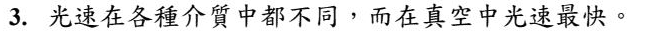
光在不同介質裡跑的速率不一樣，真空中最快（約 3 × 10⁸ m/s）。空氣中只慢一點點，水、玻璃就慢得多。
對照聲音：聲音剛好相反——在真空中根本傳不過去。
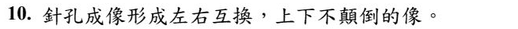
錯。針孔成像是上下、左右都顛倒——因為光走直線。
想一次就懂：物體上方發出的光，要穿過小孔只能斜斜往下走，所以落在屏幕的下方。左右也是同樣的道理。
這種「轉 180 度」的像，和照鏡子那種「只有左右相反」是完全不同的兩件事。
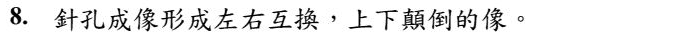
針孔成像是上下、左右都顛倒（整個轉了半圈），因為光走直線、從小孔交叉過去。
這句「左右互換、上下顛倒」正好是正確的描述。
和 113 學年度是非題第 10 題對照：那一題說「上下不顛倒」→ 否。字只差一個，答案相反。
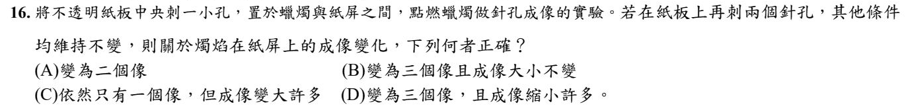
每一個針孔都會各自成一個像——三個孔就有三個像。
像的大小只跟「蠟燭到孔」和「孔到紙屏」的距離有關，多刺兩個孔，距離沒變 → 大小不變。
(A) 三個孔不會只有兩個像。(C) 孔多不會合成一個大像。(D) 距離沒變，像不會縮小。
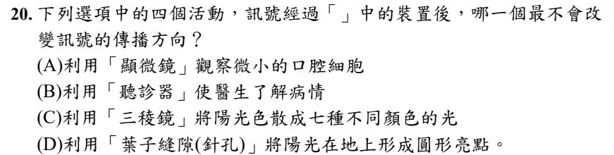
葉子縫隙在地上形成的圓形亮點，就是針孔成像（那是太陽的像）。光在空氣中直線前進，穿過小縫沒有轉彎 → 方向沒變。
(A) 顯微鏡靠透鏡折射。(B) 聽診器靠管子把聲音一路反射導進耳朵。(C) 三稜鏡讓光折射、分成七色。三個都改變了方向。
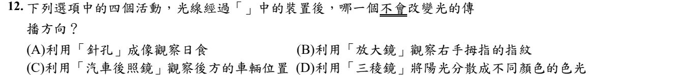
和上一題同一招：針孔成像 ＝ 光直進，光的方向沒有改變。
(B) 放大鏡是凸透鏡 → 折射。(C) 汽車後照鏡是凸面鏡 → 反射。(D) 三稜鏡 → 折射＋色散。
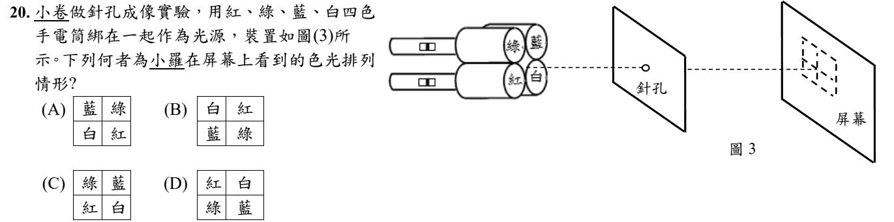
針孔成像上下、左右都顛倒，等於把原本的排列轉半圈（180°）。
照圖中的樣子，手電筒是上排「綠、藍」，下排「紅、白」。轉半圈：
上排變成「白、紅」，下排變成「藍、綠」→ (B)。
(A) 只有左右對調。(C) 完全沒變。(D) 只有上下對調。
技巧：把題目的圖倒過來看（手機轉半圈），看到的就是針孔的像。
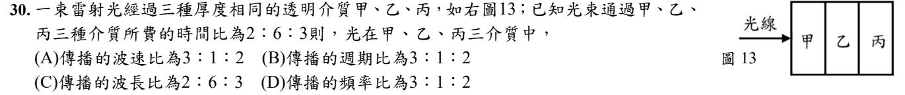
三塊厚度一樣，花的時間愈長，速率愈慢——速率和時間成反比。
時間 2：6：3 → 速率 ＝ 1/2：1/6：1/3，全部乘以 6 → 3：1：2 → (A)。
(B)(D) 光的頻率由光源決定，換介質不會變 → 頻率、週期都是 1：1：1。
(C) 波長 ＝ 速率 ÷ 頻率，頻率不變 → 波長比和速率比一樣，是 3：1：2，不是 2：6：3。
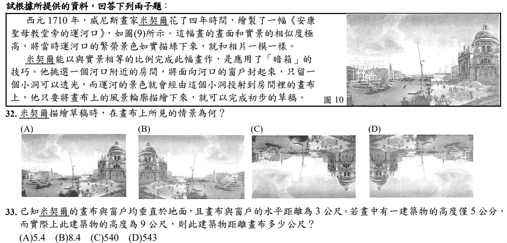
「暗箱」就是一間很大的針孔成像：小洞是針孔，畫布是紙屏。課本的結論是：針孔成像上下、左右都顛倒（整張畫轉半圈）→ (D)。
(A) 和原畫一樣，沒顛倒。(B) 只有左右相反（像照鏡子）。(C) 只有上下顛倒。
⚠️ 補充：(C) 和 (D) 的差別在「從哪一邊看畫布」。照課本「上下左右都顛倒」的說法是 (D)；但如果嚴格站在畫家的位置（背對小洞、面對畫布）看，左右其實沒有對調，會是 (C)。這一卷沒有官方解答，這裡依課本說法選 (D)，請問老師這一題怎麼算。
針孔成像可以用相似三角形：像高 ÷ 物高 ＝ 像距 ÷ 物距。
像高 5 公分 ＝ 0.05 公尺，物高 9 公尺，像距（小洞到畫布）3 公尺：
0.05 ÷ 9 ＝ 3 ÷ 物距 → 物距 ＝ 3 × 9 ÷ 0.05 ＝ 540 公尺（建築物到小洞）。
題目問的是到畫布的距離，還要再加上小洞到畫布的 3 公尺 → 540 ＋ 3 ＝ 543 公尺。
陷阱：(C) 540 是算到小洞就停了。看清楚題目問「距離誰」。
下列哪些現象可以說明光是直線傳播的？
（甲）小燈泡、兩張西卡紙的圓孔和眼睛排成一排，就可看見小燈泡的光
（乙）日晷可用來判斷時間
（丙）將塑膠管拉直可看到另一端的光，但彎曲則不能
（丁）植物行光合作用因而成長，萬物才得以生存繁衍
- (A) 甲
- (B) 甲丙
- (C) 甲乙丙
- (D) 甲乙丙丁
甲：要排成一直線才看得到，就是光走直線 ✓。乙：日晷靠影子，影子來自光走直線 ✓。丙：管子一彎光就過不來 ✓。
丁講的是光提供能量，和光怎麼走無關 ✗。
光通常以何種方式傳播？
- (A) 直線前進
- (B) 曲線前進
- (C) 弧形前進
- (D) 球形前進
在均勻介質中，光走直線。
下列關於「光」的敘述，何者正確？
- (A) 光不能在固體中傳播
- (B) 立竿見影，說明了光的直進性
- (C) 光除了沿直線前進外，亦可以曲線或弧線等多種方式傳播
- (D) 光不能在液體中傳播
竹竿擋住直線前進的光，後面才有影子。
(A)(D) 玻璃是固體、水是液體，光都能通過。(C) 均勻介質中只走直線。
關於光在真空、空氣與水中傳播速率的比較，下列何者正確？
- (A) 真空＞空氣＞水
- (B) 空氣＞水，光無法在真空中傳播
- (C) 水＞空氣＞真空
- (D) 水＞空氣，光無法在真空中傳播
光是電磁波，不需要介質，在真空中最快。介質愈「擋路」愈慢：真空＞空氣＞水＞玻璃。
小心和聲音相反：聲音在真空傳不了，在固體最快。
在地面上直立一長竹竿，則同一天內竹竿的影子在何時最長？
- (A) 中午 12 時
- (B) 上午 11 時
- (C) 下午 3 時
- (D) 下午 5 時
太陽愈低，影子愈長。四個時間裡，下午 5 時最接近日落，太陽最低。
如右圖，有甲、乙、丙三支等高的竹竿，在陽光下所產生的影長大小關係為何？

- (A) 甲＞乙＞丙
- (B) 甲＝乙＞丙
- (C) 甲＜乙＜丙
- (D) 甲＝乙＝丙
太陽非常遠，照到地面的光線可以看成互相平行。三支竹竿等高、光線方向相同，影子就一樣長。
小明站在一座高度 12 公尺的鐵塔旁，發現在陽光下鐵塔的影長為 4 公尺，而小明的影長卻只有 0.5 公尺，請問小明有多高？
- (A) 150 公尺
- (B) 200 公尺
- (C) 150 公分
- (D) 200 公分
同一時間，高度 ÷ 影長都相同。鐵塔：12 ÷ 4 ＝ 3。
小明身高 ＝ 0.5 × 3 ＝ 1.5 公尺 ＝ 150 公分。
某次月食，從開始（初虧）到結束（復原）共經歷了 25 分鐘，試問若光速變得跟聲速一樣慢，則下列敘述何者正確？
- (A) 月食從開始到結束的時間會大於 25 分鐘，且月食開始（初虧）的時間會提前
- (B) 月食從開始到結束的時間會大於 25 分鐘，但月食開始（初虧）的時間會延後
- (C) 月食從開始到結束的時間維持 25 分鐘不變，但月食開始（初虧）的時間會提前
- (D) 月食從開始到結束的時間維持 25 分鐘不變，但月食開始（初虧）的時間會延後
光變慢，影像要花更久才傳到地球，所以我們會晚一點才看到月食開始。
但開始和結束都晚了同樣的時間，兩者相差仍是 25 分鐘。
燭火不動，將手移近燭火，影子大小變化如何？

- (A) 變大
- (B) 變小
- (C) 不變
- (D) 忽大忽小
手愈靠近光源，擋住的光線張角愈大，牆上的影子就愈大。
小東將手與牆壁間的距離固定不變，而將蠟燭改換一較亮的小燈泡，仍放在蠟燭原來的位置上，則此時牆上的影子大小變化如何？
- (A) 變大
- (B) 變小
- (C) 不變
- (D) 忽大忽小
影子大小只看光源、手、牆壁的相對位置。燈變亮只會讓亮暗對比更明顯，大小不變。
小東的手會在牆壁上產生影子，這是因為光有哪一種性質造成的？
- (A) 光速比聲速快
- (B) 光的折射
- (C) 光的反射
- (D) 光的直進性
光走直線，繞不過手，手的後面就暗了。
小華中午躺在校園中一棵枝葉茂密的榕樹下，發現樹蔭裡有許多亮亮的小圓點，這是光的何種性質？
- (A) 光速極快
- (B) 光的折射
- (C) 光的反射
- (D) 光的直進
葉子間的小縫就像針孔，小圓點是太陽的針孔成像（太陽是圓的，所以亮點也是圓的）。針孔成像靠光走直線。
有一點光源距不透明物體 1 m 遠，不透明物體在屏上的影子面積是 10 cm²，若讓屏向後移動一段距離後，發現影子變為 40 cm²，試問屏移動了多少公尺？

- (A) 2
- (B) 4
- (C) 6
- (D) 8
面積變 4 倍，長和寬各變 2 倍，所以屏到光源的距離也要變 2 倍。
原本光源到屏是 1＋1＝2 m，要變成 4 m，屏移動了 4－2＝2 m。
右圖為針孔成像裝置圖，已知燭火與針孔相距 10 公分，針孔與紙屏相距 15 公分，若燭火高度為 5 公分，則紙屏上的燭火像高度為多少公分？

- (A) 5
- (B) 7.5
- (C) 10
- (D) 15
像高 ÷ 物高 ＝ 屏距 ÷ 物距 ＝ 15 ÷ 10 ＝ 1.5。
像高 ＝ 5 × 1.5 ＝ 7.5 公分。
承上題，紙屏上的燭火像之屬性為何？應如何判別？
- (A) 實像，其上下左右相反
- (B) 實像，其可成像於紙屏
- (C) 虛像，其上下左右相反
- (D) 虛像，其可成像於紙屏
判斷實像或虛像的依據是：能不能呈現在紙屏上。上下左右相反只是描述樣子，不是判別方法，所以選 (B) 不選 (A)。
紙屏上的成像圖案最接近下列何者？

- (A) 圖 (A)
- (B) 圖 (B)
- (C) 圖 (C)
- (D) 圖 (D)
針孔成像會上下顛倒，先刪掉火焰朝上的圖。
屏距 15 cm 比物距 10 cm 大，像會放大 1.5 倍，所以選又大又倒立的 (B)。
小雷如果把紙屏往後拉，使其離針孔較遠，則所產生的像會有何變化？
- (A) 變大
- (B) 變小
- (C) 變模糊
- (D) 無法成像
屏距變大，像高 ÷ 物高的比值變大，像就變大（但變暗）。針孔成像不用對焦，不會因此模糊。
如果在中間的紙板上再刺兩個一樣大的針孔，其他維持不變，則燭火在紙屏上的成像變化，下列何者正確？
- (A) 沒有變化
- (B) 變成三個像，且成像大小相同
- (C) 依然只有一個像，但成像變大許多
- (D) 變成三個像，且成像縮小許多
每個針孔各自成一個像，三個孔就有三個像。距離沒變，所以每個像的大小都和原來相同。
如果針孔成像裝置的針孔開得太大時，則在紙屏上的成像會發生什麼變化？
- (A) 沒有變化
- (B) 形成一圈亮區
- (C) 形成清晰正立的像
- (D) 像的面積縮小
孔太大，很多個像疊在一起，看不出燭火的形狀，只剩一片亮區。
若紙屏呈現清晰影像時，老師將紙屏向後移，蠟燭及針孔的位置固定不變時，燭火的像如何變化？

- (A) 變大
- (B) 變小
- (C) 不變
- (D) 不一定
紙屏遠離針孔，屏距變大，像變大。
若取一細針在燭火與針孔間，由右向左移動，則紙屏上細針的影子移動方向為何？
- (A) 向左
- (B) 向右
- (C) 向上
- (D) 向下
光線穿過針孔會交叉，物體這邊往左，紙屏那邊就往右。
在空氣中，關於光速與聲速的比較，下列何者正確？
- (A) 光速＞聲速
- (B) 光速＝聲速
- (C) 光速＜聲速
- (D) 不一定，需視當時的氣溫而定
光速約 3×108 公尺／秒，聲速約 340 公尺／秒，差了將近一百萬倍。所以打雷時先看到閃電。
下列關於光的敘述，何者正確？
- (A) 真空中的光速約為 3×108 公里／秒
- (B) 光年為時間的單位
- (C) 光的傳播速率永遠保持不變
- (D) 光在水中的傳播速率比在空氣中慢
(A) 單位錯，應是 3×108 公尺／秒。(B) 光年是距離單位。(C) 換介質，光速就會變。
如果看見閃電之後，經過 5 秒鐘才聽見雷聲，請估計發生閃電處距離觀測的地點之距離大約多少公尺？（假設當時聲速為 340 公尺／秒）
- (A) 1650
- (B) 1600
- (C) 850
- (D) 1700
光幾乎瞬間到達，時間差就是聲音走的時間。距離 ＝ 340 × 5 ＝ 1700 公尺。
假設月球至地球的距離為 4×108 公尺，則如果在月球上（面對地球的一面）發生大爆炸，則地球上的人約在多少秒後可以看見大爆炸的情形？
- (A) 1.33
- (B) 2.66
- (C) 0.67
- (D) 1330
時間 ＝ 距離 ÷ 光速 ＝ 4×108 ÷ 3×108 ≈ 1.33 秒。
晚上用手電筒照牆壁玩手影，想讓牆上的手影變得更大，應該怎麼做？
- (A) 手電筒往牆壁靠近
- (B) 手不動，手電筒離牆更遠
- (C) 手靠近手電筒、同時遠離牆壁
- (D) 手靠近牆壁、同時遠離手電筒
光走直線，影子的大小由「手擋住多大角度的光」決定。手愈靠近光源，擋住的光束角度愈大；牆愈遠，光束張得愈開 → 影子愈大。
(D) 手貼近牆壁，影子幾乎和手一樣大，反而最小。
在暗房裡，小哲在一張不透明的厚紙板上戳一個星形的小孔，讓窗外一顆圓形的亮燈泡經過小孔，照在後面的白色屏幕上。屏幕上燈泡的像最可能是什麼形狀？
- (A) 星形
- (B) 圓形
- (C) 不規則形
- (D) 正方形
針孔成像：燈泡上每一點的光都穿過小孔，在屏幕上各落成一點，拼起來就是燈泡的樣子（上下左右顛倒）。所以像的形狀由發光的物體決定，和小孔的形狀無關 → 圓形。
前提是孔要夠小；孔太大就變成光斑（影子的概念），才會像孔的形狀。
打雷時，閃電和雷聲其實是同時發生的，但我們總是先看到閃電、後聽到雷聲。主要原因是什麼？
- (A) 閃電比雷聲早發生
- (B) 光在空氣中傳播的速率遠大於聲音
- (C) 眼睛的反應比耳朵快
- (D) 光不需要介質，聲音需要介質，所以光一定比較快
光速約每秒 3 億公尺，聲速約每秒 340 公尺，差了將近一百萬倍 → 光幾乎立刻到達，聲音要走一段時間。
(D) 「需不需要介質」和「誰比較快」是兩回事，不能拿來當理由（例如聲音在固體裡也比在空氣中快，但都遠比光慢）。
第 4 章 ② 光的反射定律15 題
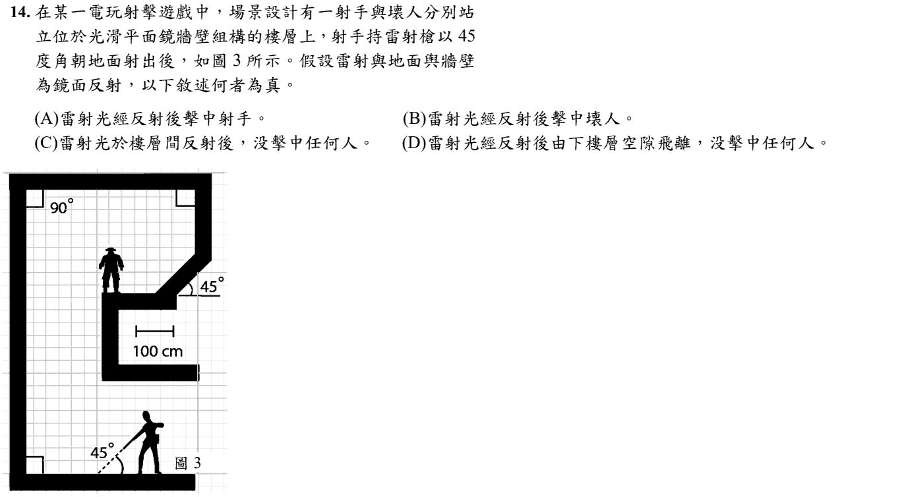
反射定律：入射角 ＝ 反射角。雷射以 45° 打下去，每次碰到地板或牆，都是 45° 進、45° 出。
跟著方格線畫：雷射打到地板 → 往左上彈到左邊的牆 → 再往右上彈。地板和牆互相垂直，光碰了這兩面之後會「掉頭」，沿著和原來平行、方向相反的路線射回去 → 打中射手自己。
這類題目一定要拿筆在格子上畫，每一段都斜走 45°（橫一格、直一格），不要用猜的。
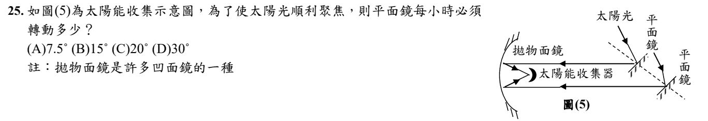
太陽每小時在天空中移動 15°（一天 24 小時繞 360°，360 ÷ 24 ＝ 15）。
關鍵：鏡子轉 1°，反射光會轉 2°（入射角和反射角同時各變 1°）。陽光每小時偏 15°，要讓反射光一直射向收集器，鏡子只要轉一半 → 7.5°。
(B) 15° 是太陽移動的角度，不是鏡子要轉的角度。
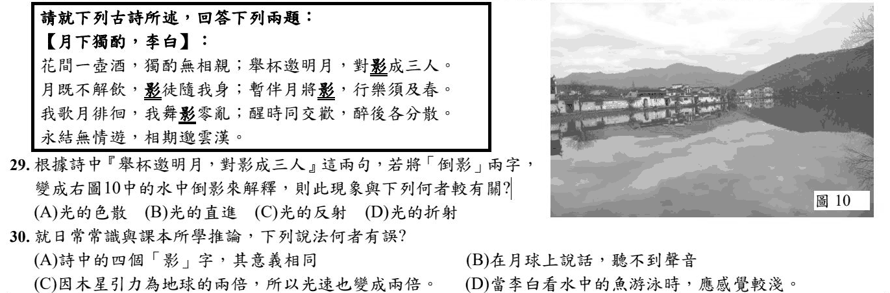
水面在這裡就是一面鏡子——光從月亮射到水面、彈回來進入眼睛，所以是反射。
那什麼時候是折射？當你看的是水裡面的東西（魚、石頭、伸進水裡的筷子）——光從水裡穿出來，方向轉了彎。
一句話分清楚：看水面上的倒影＝反射；看水面下的東西＝折射。
(C) 是這一題要抓的：光速不會因為重力大就變快。真空中的光速是一個常數（約每秒 30 萬公里），它是宇宙的上限，不是可以被拉快的東西。
(B) 月球沒有大氣，聲音沒有介質可以傳，正確。
(D) 水中的魚因為折射，看起來比實際位置淺，正確——所以叉魚要往看到的位置下方叉。
🔴 說句公道話：(A) 嚴格看也站不住腳（詩中的「影」有月影、身影、倒影，意義並不完全相同）。學校公布的答案是 (C)，而 (C) 的物理錯誤最明確，所以在考場上仍應選 (C)——但你能看出 (A) 也怪怪的，代表你讀得比題目還仔細。
白天室內沒有光源仍可看見物體的存在，這是因為物體表面對於室外投射過來的光線發生什麼現象所造成？
- (A) 反射
- (B) 繞射
- (C) 折射
- (D) 斜射
物體把外面照進來的光反射進我們的眼睛，我們才看得見它。
有關反射定律的敘述，下列何者錯誤？
- (A) 入射角大於 0 度時，入射線和反射線分別在法線的兩側
- (B) 入射線、反射線、法線必在同一平面
- (C) 當光線沿著法線入射時，光線不會反射
- (D) 當入射角為 30 度時，入射線和反射線的夾角為 60 度
沿著法線入射時，入射角是 0 度，反射角也是 0 度：光線原路彈回，仍然有反射。
小雷如果想在黑暗的房間中，從平面鏡中看到自己的臉，請問他應該將手電筒的光照向哪裡成像會最清楚？
- (A) 平面鏡
- (B) 自己的臉
- (C) 天花板
- (D) 地板
要看到臉，臉要有光反射到鏡子。把光照在臉上，臉才夠亮。
如右圖，MM′ 為平面鏡，有一束光線由 A 點射向鏡上 O 點，試問入射角與反射角分別為何？

- (A) 30 度；30 度
- (B) 30 度；60 度
- (C) 60 度；30 度
- (D) 60 度；60 度
60° 是光線和鏡面的夾角。入射角從法線量：90－60＝30 度，反射角也等於 30 度。
承上題，若將 MM′ 順時針旋轉 20°，但 AO 的入射方向不變，則反射角的角度將會如何改變？
- (A) 變大
- (B) 變小
- (C) 不變
- (D) 不一定
鏡子順時針轉，法線也順時針轉（往右偏 20°），離左邊的入射光更遠。入射角變成 30＋20＝50 度，反射角跟著變大。
如右圖為光線反射的情形，若將平面鏡逆時針旋轉 10 度後，入射光與反射光的夾角為何？

- (A) 90 度
- (B) 80 度
- (C) 60 度
- (D) 50 度
原入射角 ＝ 90－55＝35 度。鏡子逆時針轉 10 度，法線往左偏，靠近左邊的入射光：入射角變 35－10＝25 度。
夾角 ＝ 25＋25＝50 度。
如右圖所示，一束平行光照射到一個不平坦面上時，反射的光線雜亂無序，此現象稱為「漫射」，試問下列漫射的敘述何者正確？甲. 漫射的光線遵守光的直進性；乙. 漫射的光線不遵守光的直進性；丙. 漫射的光線遵守反射定律；丁. 漫射的光線不遵守反射定律。

- (A) 甲丙
- (B) 乙丙
- (C) 甲丁
- (D) 乙丁
每一條光線都走直線，碰到各自的小斜面時也都遵守反射定律。只是每個地方的法線方向不同，所以反射光才散開。
先將鋁箔弄皺後再攤開，則當光在凹凸不平的鋁箔面上反射時，其入射角和反射角的關係為何？
- (A) 入射角＞反射角
- (B) 入射角＜反射角
- (C) 入射角＝反射角
- (D) 視凹凸的情況而定
和上一題相同：凹凸面上的每個小點仍遵守反射定律。
陽光從窗戶斜射進房間，我們能看到光束中有許多灰塵在飄。為什麼看得到這些灰塵？
- (A) 灰塵自己會發光
- (B) 灰塵把照到的陽光反射到我們眼睛裡
- (C) 灰塵吸收了全部的陽光
- (D) 灰塵的顏色太黑了
灰塵不是光源，我們能看見它，是因為它把陽光反射進眼睛。沒有陽光照到的地方，同樣的灰塵就看不見。
光照在毛玻璃、砂紙這類粗糙表面時，反射光會射向四面八方（漫射）。關於漫射，下列敘述何者正確？
- (A) 漫射時光線不遵守反射定律
- (B) 漫射時每一條光線仍然遵守反射定律，只是各處的表面方向不同
- (C) 只有平面鏡的反射才遵守反射定律
- (D) 粗糙表面不會反射光
粗糙表面放大來看，是很多朝向不同方向的小平面。每一條光線碰到它那一小塊表面時，入射角仍然等於反射角；只是每一小塊的法線方向都不一樣，反射光才會散開。
一道光射到平面鏡上，光線和鏡面的夾角是 30°。反射角是多少？
- (A) 30°
- (B) 60°
- (C) 90°
- (D) 120°
入射角、反射角都是光線和法線（垂直鏡面的線）的夾角，不是和鏡面的夾角。
和鏡面夾 30° → 和法線夾 90° − 30° ＝ 60° → 入射角 60° ＝ 反射角 60°。
(A) 直接用了光線和鏡面的夾角。
第 4 章 ③ 平面鏡的成像性質26 題
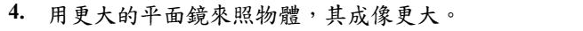
平面鏡的像和物體一樣大，跟鏡子大小無關。
鏡子大，只是能看到的範圍比較大（看得到全身），像本身沒有變大。
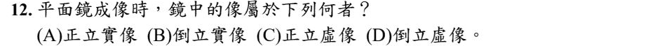
你在鏡子裡是正立的（頭在上），這不用想。
關鍵是虛像：把一張紙放到鏡子後面，接不到任何影像——那個「你」不在鏡子後面，是你的大腦把反射光線往回延長畫出來的。
再複習一次那條捷徑：實像必倒立、虛像必正立。既然是虛像，就只可能是「正立虛像」，(B)(D) 直接刪掉。
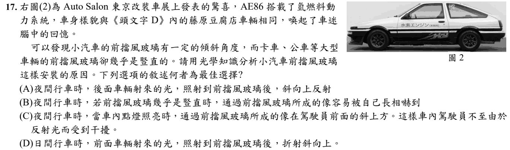
擋風玻璃除了讓光透過，也會像平面鏡一樣反射一部分的光。晚上車內開燈，玻璃上就會出現車內東西的虛像。
玻璃斜斜的，這個像就跑到駕駛前方的斜上方，不擋住前面的路；如果玻璃是豎直的，像就剛好落在駕駛眼前，干擾開車 → (C)。
(A) 後車的光主要照到後照鏡、後擋風玻璃。(B) 重點不是「嚇到」，而是擋視線。(D) 討論的是反射，不是折射。
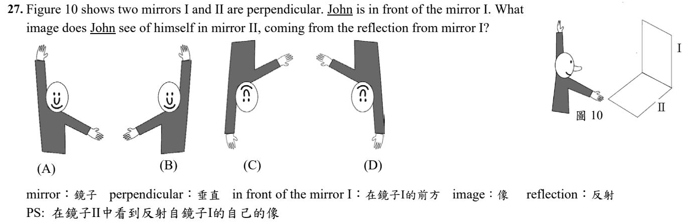
分兩步：先在鏡 I 成像，再把這個像拿到鏡 II 裡照一次。
① 鏡 I 是直立的牆鏡：John 看到的是一般照鏡子的像——正立，就像選項 (A) 那樣。
② 鏡 II 是平放在地上的鏡子：地上的鏡子會讓像上下顛倒（像水中倒影），所以把 (A) 上下翻過來 → 舉起的手變成在下面、伸出的手變成往上 → (C)。
(A)(B) 沒有倒過來，不是地上鏡子的像。(D) 倒過來了，但左右也跟著換了邊。
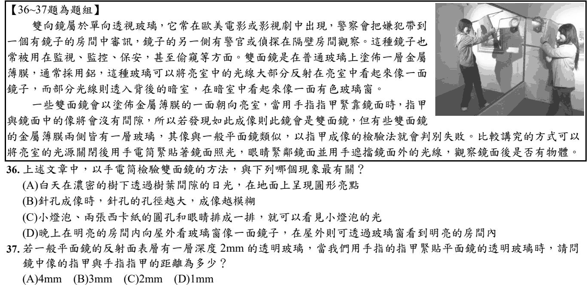
雙面鏡的原理：哪一邊亮，玻璃就對那一邊像鏡子；從暗的一邊可以看穿到亮的一邊。
手電筒法把亮室的燈關掉、只照鏡面——等於讓鏡子後面相對變亮，就看得到後面有沒有東西。
(D) 晚上屋內亮、屋外暗：屋內的人看窗戶像鏡子，屋外的人卻看得到屋內 → 同一個道理。
(A)(B)(C) 都是「光直線前進」的現象，跟這篇文章講的反射與透光無關。
平面鏡：物距 ＝ 像距。但要量到反射面，不是量到玻璃表面。
反射面在玻璃後面 2 mm，指甲貼著玻璃 → 指甲到反射面 2 mm → 像在反射面後面 2 mm。
指甲到像 ＝ 2 ＋ 2 ＝ 4 mm。
文章裡說「指甲與像沒有間隙」的是雙面鏡（金屬膜在表面）；一般鏡子會看到間隙，就是這 4 mm。
當眼睛往平面鏡中央看時，可完整看到哪一張紙卡？

- (A) 1 號卡
- (B) 2 號卡
- (C) 3 號卡
- (D) 都看不到
眼睛和紙卡都在鏡子同一邊，反射點的法線要把「眼睛」和「紙卡」的夾角平分。鏡子中央大約在 1 號卡下方，眼睛在左邊，對稱過去就是 2 號卡。
⚠ 本題要看圖上的相對位置，答案依圖判斷。
若想在鏡中完整看到 1 號卡，則可將平面鏡往哪一方向移動？
- (A) 向左移動
- (B) 向右移動
- (C) 向上移動
- (D) 無論怎麼移動都看不到
反射點要落在眼睛和 1 號卡的正中間，這個位置在目前鏡子中央的左邊，所以鏡子要往左移。
關於平面鏡的成像性質，下列敘述何者錯誤？
- (A) 物長等於像長
- (B) 像可以用紙屏顯現出來
- (C) 上下不顛倒
- (D) 左右相反
平面鏡成的是虛像，不是實際光線聚成的，紙屏接不到。
下列哪一個物體在鏡中的成像是錯誤的？

- (A) 圖 (A)
- (B) 圖 (B)
- (C) 圖 (C)
- (D) 圖 (D)
正確的像要和物體以鏡面左右對稱。(C) 的箭頭兩邊都朝左上，沒有對稱。
下列各圖中，何者為一把梳子及其在平面鏡中正確的成像？

- (A) 圖 (A)
- (B) 圖 (B)
- (C) 圖 (C)
- (D) 圖 (D)
鏡前的梳子：握把在左下、頭在右上、齒朝右下。對稱過去就是：握把在右下、頭在左上、齒朝左下，是 (B)。
將一張寫有「b d」的字卡豎立在平面鏡前，則眼睛在平面鏡前觀看「b d」在鏡中的成像應為何？
- (A) b d
- (B) p q
- (C) d b
- (D) q p
左右對調有兩件事：順序對調，每個字也翻面。
先對調順序成 d、b，再翻面：d→b、b→d，結果還是 b d。
在白紙上自左而右寫英文字母 pqbd，放在平面鏡旁，則鏡中的像自左而右為何？
- (A) qpbd
- (B) bdpq
- (C) pqbd
- (D) dbqp
順序對調：d、b、q、p。每個字翻面：d→b、b→d、q→p、p→q。結果 bdpq。
如果有一個沒有數字的指針時鐘，在平面鏡中的時間是 2 時 40 分，請問時鐘正確的時間是多少？
- (A) 2 時 40 分
- (B) 9 時 20 分
- (C) 9 時 40 分
- (D) 10 時 20 分
鏡內時間＋實際時間＝12 小時。12:00－2:40＝9 時 20 分。
一平面鏡右側放置一個僅有刻度但無數字標示的指針式時鐘，其相對位置如右圖，平面鏡內時鐘的成像時間為 4 時 23 分，則此時之正確時間應為何？

- (A) 4 時 23 分
- (B) 7 時 37 分
- (C) 8 時 23 分
- (D) 8 時 37 分
12:00－4:23＝7 時 37 分。
西施用鏡子照自己的臉，發現因鏡子太小，沒辦法一次照到全部的臉，因此西施把鏡子拿遠離自己的臉，試回答他所看到的影像會如何變化？
- (A) 西施從鏡中見到臉的範圍並不會變得更大
- (B) 西施從鏡中所能見到臉的範圍變大，鏡子越遠離越容易看到全部的臉
- (C) 西施從鏡中見到臉的範圍會變得越來越小
- (D) 西施從鏡中看到的臉產生了變形
鏡子拿遠時，眼睛到像的距離也變遠，兩者同比例變化。能看到的範圍永遠是鏡子大小的 2 倍，不會變。
曉秋在平面鏡中看到自己的影像，如果他遠離平面鏡後退 1 公尺，則他與鏡中影像之間的距離將會有何種變化？
- (A) 增加 1 公尺
- (B) 減少 1 公尺
- (C) 增加 2 公尺
- (D) 減少 2 公尺
人退 1 公尺，像也往鏡後退 1 公尺，兩者距離增加 2 公尺。
小民站在一平面鏡前 4 公尺處，可看到自己鏡中的成像；若他往平面鏡靠近了 1.5 公尺，則他與鏡中成像的距離應為多少？
- (A) 2.5 公尺
- (B) 3 公尺
- (C) 5 公尺
- (D) 5.5 公尺
靠近後距離鏡子 4－1.5＝2.5 公尺，人和像的距離是兩倍：5 公尺。
君君原本站在平面鏡前 5 公尺處，向前移動一段距離後，發現自己與鏡中成像的距離變為 6 公尺，請問君君向前移動了幾公尺？
- (A) 1 公尺
- (B) 2 公尺
- (C) 3 公尺
- (D) 4 公尺
人和像相距 6 公尺，代表人距離鏡子 3 公尺。移動了 5－3＝2 公尺。
如右圖所示，東寧的前、後、左、右共有四面鏡子，若東寧向右移動，則此四面鏡子中，有幾面鏡內東寧的像是向右移動？

- (A) 1 面
- (B) 2 面
- (C) 3 面
- (D) 4 面
上下兩面（B、D）和移動方向平行，像跟著向右。
左右兩面（A、C）和移動方向垂直：人靠近右鏡，像也朝鏡面靠近，等於向左；左鏡同理也向左。所以只有 2 面。
如右圖所示，壁畫中間有一小孔，上下隔板間有一個 24 cm 寬的間距，隔板後有一平面鏡。蕭佩若要由壁畫小孔透過平面鏡觀察壁畫，試問最多可觀察多寬的壁畫？

- (A) 32 cm
- (B) 36 cm
- (C) 48 cm
- (D) 96 cm
把鏡子後面「攤平」來看：從眼睛出發，隔板在 50 cm，鏡子在 100 cm，隔板的像在 150 cm，壁畫的像在 200 cm。
光線去程穿過 50 cm 的間距，回程還要穿過 150 cm 的間距（也是上下各 12 cm）。限制最嚴的是 150 cm 這一關。
到 200 cm 時，單邊寬度 ＝ 12 × 200 ÷ 150 ＝ 16 cm，上下合計 32 cm。
最容易選錯 (D) 96 cm：那是只算去程、忘記光從壁畫到鏡子也要穿過隔板。
芬蘭手拿著一面 40 公分寬的平面鏡，鏡面放在自己眼前 10 公分處，如果芬蘭想要從鏡子內看到背後 2.8 公尺寬的白板，則芬蘭至少要距白板多少公分才能看到整個白板？
- (A) 25 cm
- (B) 50 cm
- (C) 80 cm
- (D) 140 cm
設人到白板 x 公分。白板到鏡子 x＋10，鏡中的白板離眼睛 ＝ 10＋(x＋10) ＝ x＋20。
相似三角形：40 ÷ 10 ＝ 280 ÷ (x＋20)，得 x＋20＝70，x＝50 公分。
有一平面鏡與地面夾角 45 度，若將一小球放於鏡前，如右圖所示，試問小球在鏡中的成像位置應是下列何者？

- (A) 甲
- (B) 乙
- (C) 丙
- (D) 丁
像和物體對鏡面對稱：從小球畫一條垂直鏡面的線穿過去，鏡後等距離的位置就是像，落在乙。
阿滴站在與地面夾角 45 度的平面鏡前，如右圖所示，試問阿滴由鏡中所見自己的影像應為下列何者？

- (A) 鏡中的影像與真實的地面平行
- (B) 鏡中的影像與地面垂直
- (C) 鏡中的影像與地面夾角 45 度
- (D) 鏡中的影像與地面夾角 22.5 度
人和鏡面夾 45 度，對稱過去的像和鏡面也夾 45 度，人和像之間就是 90 度。人是直立的，像就躺平，和地面平行。
小琪站在平面鏡前 1.5 公尺處，背後有一面牆。她從鏡中看到牆的像，量出牆的像離她 6 公尺。平面鏡和牆相距多少公尺？
- (A) 3
- (B) 4.5
- (C) 6
- (D) 7.5
牆的像在鏡子後方，像到鏡子的距離 ＝ 牆到鏡子的距離（設為 D）。
小琪到牆的像 ＝ 小琪到鏡子 ＋ 鏡子到牆的像 ＝ 1.5 ＋ D ＝ 6 → D ＝ 4.5 公尺。
(A) 以為要除以 2。(C) 把「像離小琪」當成了「牆離鏡子」。
電梯裡左邊牆壁和正前方牆壁各有一面平面鏡（A 鏡在左、B 鏡在前）。小南面向前方，往左走近 A 鏡。從小南的角度看，A 鏡和 B 鏡裡的像分別往哪個方向移動？
- (A) A 鏡中的像向右（往鏡面靠近），B 鏡中的像向左
- (B) A 鏡中的像向左，B 鏡中的像向右
- (C) A 鏡中的像向右，B 鏡中的像向右
- (D) 兩面鏡子裡的像都不動
平面鏡的像和人對稱於鏡面。
A 鏡：小南從右邊往左靠近鏡面，鏡後的像也要往鏡面靠近，從鏡子另一側過來 → 像向右移動。
B 鏡：小南沿著和鏡面平行的方向往左走，像也跟著往左平移（左右相反說的是「面對面」時的左右手，平移方向是一樣的）。
第 4 章 ④ 凸面鏡與凹面鏡5 題
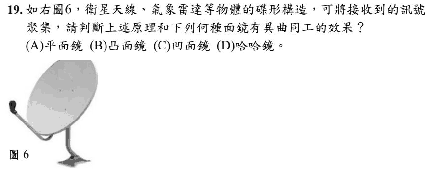
碟形天線、雷達是凹進去的面：平行射來的訊號碰到它，會被反射會聚到焦點，接收器就放在焦點上。
凹面鏡也是同樣的功能（例如太陽能聚光）→ (C)。
(A) 平面鏡不會聚光。(B) 凸面鏡讓光發散。(D) 哈哈鏡是凹凸不平的鏡子，把像扭曲。
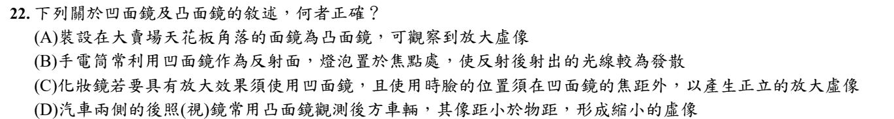
(A) 賣場角落是凸面鏡沒錯，但凸面鏡成縮小的虛像（才看得到大範圍），不是放大 ✗
(B) 燈泡放在凹面鏡焦點，反射後是平行光射出（照得遠），不是發散 ✗
(C) 化妝鏡是凹面鏡沒錯，但臉要在焦距以內，才會成正立放大虛像 ✗
(D) 後照鏡用凸面鏡：成正立縮小虛像，像距小於物距 ✓
公路局要在山路的急轉彎處設一面鏡子，讓駕駛看到彎道另一邊的來車。應選哪一種鏡子、設在哪裡最恰當？
- (A) 凹面鏡，設在彎道內側
- (B) 凸面鏡，設在彎道外側、能同時照到兩邊來車的地方
- (C) 平面鏡，設在直線路段
- (D) 凸面鏡，設在彎道內側被山壁擋住的地方
凸面鏡成正立縮小的虛像，視野範圍大，最適合讓駕駛看到被山壁擋住的路段。
位置要在彎道外側，兩個方向的駕駛都看得到鏡子，鏡子也照得到另一邊。(D) 內側被山壁擋住，駕駛根本看不到鏡子。
耳鼻喉科醫師額頭上戴一面中間有小孔的鏡子，把燈光聚集照進病人的喉嚨。這面鏡子是哪一種？
- (A) 凸面鏡，可以會聚光線
- (B) 凸面鏡，可以把光散開、照亮更大範圍
- (C) 凹面鏡，可以把光會聚，讓照射處更亮
- (D) 平面鏡，光線不會改變
凹面鏡會把光會聚到焦點附近，照在小範圍裡特別亮，醫生從中央小孔就能看清楚喉嚨深處。
(A) 凸面鏡讓光發散，不會會聚。(B) 發散後光被分散，照在喉嚨裡反而變暗。
甲 化妝用的放大鏡（可以照出放大的臉）—凹面鏡；乙 汽車車頭燈後面的反射罩—凹面鏡；丙 超商角落的防盜鏡—凹面鏡。上述配對正確的有哪些？
- (A) 甲乙
- (B) 乙丙
- (C) 甲丙
- (D) 甲乙丙
甲 ✓ 臉在凹面鏡焦點以內，成正立放大虛像。乙 ✓ 燈泡放在凹面鏡焦點，反射後變成平行光，照得遠。
丙 ✗ 防盜鏡要看到大範圍，是凸面鏡（正立縮小虛像、視野廣）。
第 4 章 ⑤ 光的折射27 題
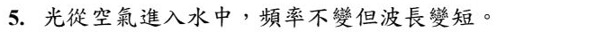
頻率由光源決定，換到別的介質也不會變。
光進入水中，速率變慢；波長 ＝ 速率 ÷ 頻率，頻率不變、速率變小 → 波長變短。
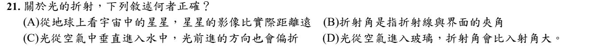
先把明顯錯的刪掉：
(B) 折射角是折射線和法線的夾角，不是和界面 ✗
(C) 垂直射入時方向不會偏折 ✗
(D) 空氣進入玻璃，光變慢、偏向法線 → 折射角比入射角小 ✗
(A) 星光穿過地球的大氣層會折射，所以我們看到的星星位置和它實際的位置不一樣 → 選 (A)。
補充：更精確的說法是，大氣折射讓星星看起來比實際位置高一點。選項寫「距離比較遠」不太精確，但另外三個選項都明顯錯，用刪去法選 (A)。
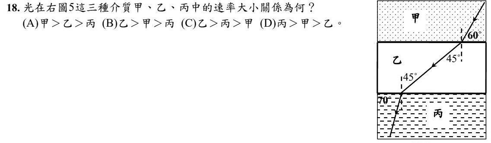
規則：光線和法線的夾角愈大，那個介質裡的光速愈快。
先把每一層換成「和法線的夾角」（圖中的虛線是法線）：
甲：標示的 60° 是和界面的夾角 → 和法線 90 − 60 ＝ 30°
乙：和法線 45°
丙：標示的 70° 是和界面的夾角 → 和法線 20°
45° ＞ 30° ＞ 20° → 光速 乙 ＞ 甲 ＞ 丙。
陷阱：題目給的角度不一定是從法線量的，先看清楚角度標在哪裡。
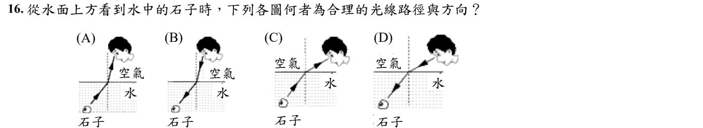
先想清楚光的方向：我們看到石子，是光從石子出發 → 水 → 空氣 → 進入眼睛。(B)(D) 箭頭是從眼睛射向石子，方向反了 ✗。
光從水進入空氣，速率變快，折射線偏離法線（變得更斜）。
(A) 進入空氣後反而變得更直（偏向法線）✗。(C) 進入空氣後變得更斜 ✓。
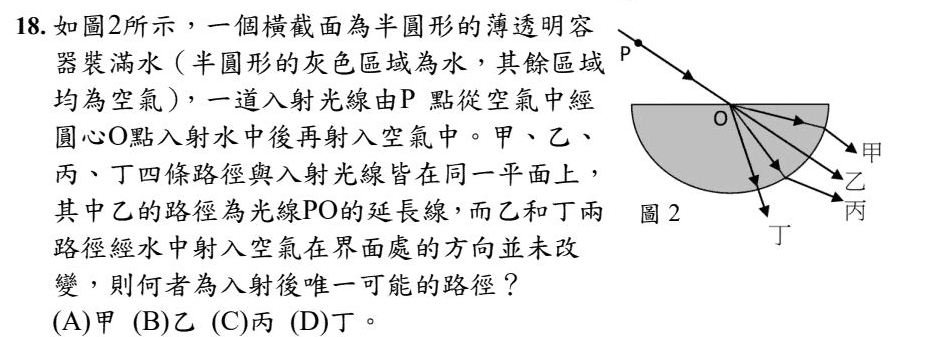
過圓心 O 的法線是一條鉛直線。光從空氣進入水，速率變慢，要偏向法線——也就是比原來的方向（乙，PO 的延長線）更陡、更往下 → 丁。
甲、丙比乙更斜，是偏離法線，方向錯了。
為什麼丁在曲面射出時不轉彎？因為光從圓心出發，沿著半徑走，剛好垂直射到圓弧上，垂直入射就不偏折。
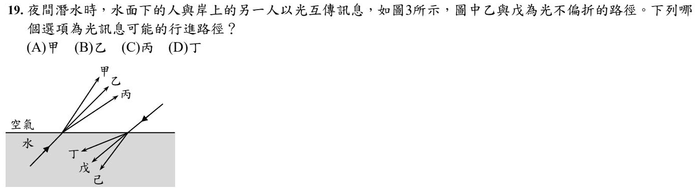
甲、乙、丙是從水裡射到空氣的光，乙是沒有偏折的路線。
水 → 空氣：光變快，偏離法線（變得更斜、更貼近水面）→ 比乙更斜的是 丙。
(A) 甲比乙更直（偏向法線），方向反了。(D) 丁是從空氣射進水裡的光：空氣 → 水應該偏向法線（應該是己），丁卻更斜 ✗。
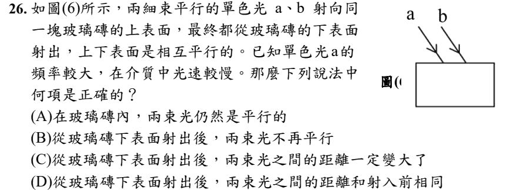
a 光在玻璃中比較慢 → 進玻璃時偏折得比較多（更偏向法線）；b 偏折得少。
(A) 兩束偏折的程度不同，在玻璃裡就不平行了 ✗
(B) 上下表面互相平行，光從下表面射出時會「轉回」原來的方向 → 兩束出來後又平行 ✗
(C) 在玻璃裡，b 比 a 更往右斜，兩束愈走愈開 → 射出後距離變大 ✓
(D) 距離已經被拉開，不會和原來相同 ✗
關於光的折射現象，下列敘述何者錯誤？
- (A) 是光由一種均勻介質進入另一種均勻介質中所發生的現象
- (B) 產生的原因是光在不同介質中，有不同的行進速率
- (C) 反射與折射會同時發生
- (D) 折射發生時，若光的傳播速率變慢，折射線會偏離法線
光速變慢，折射線應該偏向法線。可以記成：慢下來，就往法線靠。
以下是日常生活中常會看到的一些現象，請問哪些和光的折射相關？
甲. 藉由放大鏡輔助閱讀；乙. 皮影戲；丙. 筷子插入加水的玻璃杯中，看起來像是折斷一樣；丁. 視角不變，在碗中加水使原本看不見的碗底硬幣可整個被看見；戊. 在山路轉彎處架設凸面鏡。
- (A) 甲、乙、丙、丁
- (B) 甲、乙、丁
- (C) 甲、丙、丁
- (D) 乙、丙、丁
甲（透鏡）、丙、丁都是折射。乙皮影戲是光的直進（影子）；戊凸面鏡是反射。
將筷子插入盛水的燒杯中，從水面上看，筷子像斷成了兩截，這現象是光的哪個性質所造成？
- (A) 光速極快
- (B) 光沿直線傳播
- (C) 光的反射
- (D) 光的折射
水中筷子的光進入空氣時發生折射，看起來位置改變。
如右圖所示，AO 為光的入射線，下列敘述何者錯誤？

- (A) OB 是反射線，OC 是折射線
- (B) ∠1 必等於 ∠2
- (C) 此光線是由傳播速率慢的介質射向傳播速率快的介質
- (D) 若 CO 是光的入射線，則折射線必為 OA
圖中折射線 OC 比入射線更靠近法線，代表光變慢了，是從快的介質射向慢的介質。
(D) 是光的可逆性，正確。
右圖為一折射實驗，若入射光線 I 由空氣進入水中，則可能的折射光線應為何？

- (A) a
- (B) b
- (C) c
- (D) 皆有可能
空氣進水，光變慢，折射線偏向法線。b 是直線沒有偏折，最靠近法線的是 c。
承上題，若入射光線 I 由水進入空氣中，則可能的折射光線應為何？
- (A) a
- (B) b
- (C) c
- (D) 皆有可能
水進空氣，光變快，折射線偏離法線，選離法線最遠的 a。
小娟將一根筷子插入水中，當他從上方觀察時，所看到的情形最可能是下列何者？

- (A) 圖 (A)
- (B) 圖 (B)
- (C) 圖 (C)
- (D) 圖 (D)
水中的物體看起來比實際淺，水中的筷子像是往水面翹起，比水面上那一段更平，就是 (B)。
當我們注視沉在許願池中的硬幣時，視覺上感覺的距離和實際深度有何差異？
- (A) 看起來比較深
- (B) 看起來比較淺
- (C) 跟實際深度相同
- (D) 會隨光線強度而改變
從空氣看水中物體，看起來變淺、變近。
珍珍到海中進行浮潛活動時，仰頭看見海面上有一隻海鳥飛過。請問海鳥實際的位置與珍珍從水中所看到的海鳥位置相較為何？
- (A) 高
- (B) 低
- (C) 相同
- (D) 不一定，要視海水的溫度而定
從水中看空氣中的東西，會覺得變遠、變高。所以海鳥實際位置比看到的低。
光由空氣射入水中的相關現象，下列敘述何者錯誤？
- (A) 同時發生反射和折射
- (B) 入射角等於反射角
- (C) 入射角大於折射角
- (D) 光的頻率變小
折射時光速和波長改變，頻率不變。
如下圖所示，光以相同的入射角從水中射出到四種不同的介質中，試問光在哪一種介質中的傳播速率最快？

- (A) 圖 (A)
- (B) 圖 (B)
- (C) 圖 (C)
- (D) 圖 (D)
光速愈快，折射線偏離法線愈多，折射角愈大。(D) 最偏離法線。
如右圖，光線經過甲、乙、丙三層介質時發生折射，且 γ＞α＞β，則光線在三介質中的速率快慢比較為何？

- (A) 甲＞乙＞丙
- (B) 丙＞乙＞甲
- (C) 丙＞甲＞乙
- (D) 乙＞甲＞丙
光線和法線的夾角愈大，光速愈快。假設 α、β、γ 依序在甲、乙、丙，γ 最大、β 最小，所以 丙＞甲＞乙。
⚠ 講義第 12 題沒有印自己的圖，這裡借用第 13 題的圖，並假設 α、β、γ 依序在甲、乙、丙。
如右圖，光線經過甲、乙、丙三層介質時發生折射，且 ∠3＞∠1＞∠2，則光線在三介質中的速率快慢為何？
- (A) 甲＞乙＞丙
- (B) 乙＞甲＞丙
- (C) 丙＞甲＞乙
- (D) 丙＞乙＞甲
∠1、∠2、∠3 分別在甲、乙、丙，角度愈大光速愈快：丙＞甲＞乙。
有一光線由介質 A 射向介質 B，已知入射角為 50°，折射角為 30°，則其反射線與折射線的夾角為何？
- (A) 20°
- (B) 60°
- (C) 80°
- (D) 100°
反射角也是 50°。反射線和折射線的夾角 ＝ 180°－50°－30°＝100°（一條法線的上下兩段是 180°）。
子瑜用雷射筆，將光線以 45 度的入射角由水中射入不同介質中，然後測量折射角，其所得的數據如下表所示，則下列何種介質最可能是空氣？
| 介質 | 甲 | 乙 | 丙 | 丁 |
|---|---|---|---|---|
| 入射角 | 45° | 45° | 45° | 45° |
| 折射角 | 25° | 45° | 35° | 60° |
- (A) 甲
- (B) 乙
- (C) 丙
- (D) 丁
水進空氣，光變快，折射角要大於入射角。只有丁（60°）符合。
已知 θ₁＞θ₃，試問光在哪一個介質中的傳播速率較快？

- (A) 兩者均一樣快
- (B) 介質 A
- (C) 介質 B
角度大的那一邊光速快。θ₁ 在 A，所以 A 較快。
試問 θ₁ 及 θ₂（反射角）的大小比較為何？
- (A) θ₁＝θ₂
- (B) θ₁＜θ₂
- (C) θ₁＞θ₂
- (D) 條件不足，無法判斷
反射定律：入射角等於反射角。
上題，試問 θ₂ 及 θ₃ 的大小比較何者正確？
- (A) θ₂＝θ₃
- (B) θ₂＜θ₃
- (C) θ₂＞θ₃
- (D) 條件不足，無法判斷
θ₂＝θ₁，而 θ₁＞θ₃，所以 θ₂＞θ₃。
一道光依序斜斜穿過互相平行的甲、乙、丙三層透明介質。光線和法線的夾角，在甲層是 a、乙層是 b、丙層是 c，而且 c ＞ a ＞ b。光在三層中的速率由快到慢為何？
- (A) 甲＞乙＞丙
- (B) 甲＞丙＞乙
- (C) 丙＞甲＞乙
- (D) 丙＞乙＞甲
折射的規則：光在哪一層跑得愈快，光線和法線的夾角就愈大。
夾角 c ＞ a ＞ b → 速率 丙 ＞ 甲 ＞ 乙。
小安在海裡浮潛，從水面下抬頭看天上飛過的海鳥。下列敘述何者正確？
- (A) 光從小安的眼睛射向海鳥，所以他看得到
- (B) 光從海鳥經空氣進入水中時偏向法線，海鳥看起來比實際位置高
- (C) 光從空氣進入水中速率變快，所以偏離法線
- (D) 光直接直線進入水中，海鳥位置看起來不變
看得見東西，是光從物體進入眼睛（(A) 方向反了）。
光從空氣進入水中速率變慢 → 折射線偏向法線（(C) 錯）。眼睛順著進入眼睛的光線往回延長，會覺得海鳥在比實際更高、更靠近頭頂的地方。
(D) 只有垂直射入時才不偏折，斜射一定會偏折。
第 4 章 ⑥ 凸透鏡與凹透鏡9 題
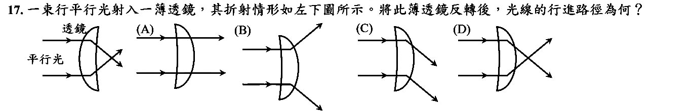
圖中是凸透鏡（中間厚、邊緣薄），平行光穿過後會聚、交叉。
把它翻面，它還是中間厚、邊緣薄 → 還是凸透鏡 → 平行光一樣會聚到焦點再散開 → (D)。
(A) 光完全沒偏折 ✗。(B) 光往外發散，那是凹透鏡 ✗。(C) 兩條光都往下偏，沒有會聚 ✗。
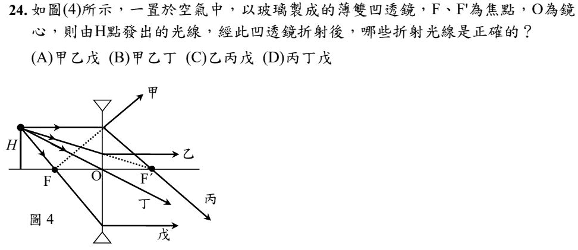
凹透鏡的三條特殊光線：
① 平行主軸射入 → 折射後往外散，延長線好像從同一側的焦點 F 發出 → 甲 ✓（圖中虛線就是從 F 拉過來）
② 朝另一側焦點 F′射去 → 折射後平行主軸 → 乙 ✓
③ 通過鏡心 O → 直直穿過不偏折 → 丁 ✓
丙（平行光折射後通過 F′）和戊（通過 F 後變平行）是凸透鏡的規則，放到凹透鏡就錯了。
下列哪一種透鏡屬於凹透鏡？

- (A) 圖 (A)
- (B) 圖 (B)
- (C) 圖 (C)
- (D) 圖 (D)
凹透鏡中央薄、周圍厚。(B) 兩端明顯比中間厚。
下列哪一種透鏡屬於凸透鏡？

- (A) 圖 (A)
- (B) 圖 (B)
- (C) 圖 (C)
- (D) 圖 (D)
凸透鏡中央厚、周圍薄。(A) 中間厚，兩端尖。
將兩個三稜鏡如何組合時，其產生的光線路徑與凸透鏡最相似？

- (A) 圖 (A)
- (B) 圖 (B)
- (C) 圖 (C)
- (D) 圖 (D)
光經過三稜鏡會往底邊偏。兩塊底邊靠在中間，上下兩道光都往中間偏，就會聚了，像中央厚的凸透鏡。
將三稜鏡排放如下時，何者產生的光線路徑與凹透鏡較類似？

- (A) 圖 (A)
- (B) 圖 (B)
- (C) 圖 (C)
- (D) 圖 (D)
光往底邊偏。(D) 兩塊的尖端在中間、底邊朝外，上下兩道光都往外偏，就發散了，像中央薄的凹透鏡。
隔著一個裝滿水的直立圓柱形透明水瓶側面，看遠處的一棵樹，樹的影像會怎樣？
- (A) 上下顛倒、左右相反
- (B) 上下顛倒、左右不變
- (C) 上下不變、左右相反
- (D) 上下、左右都不變
圓柱形水瓶只有左右方向是彎的（像凸透鏡），上下方向是直的（像一塊平板）。
遠處的樹經過「左右方向的凸透鏡」成倒立實像 → 只有左右相反；上下方向沒有透鏡作用 → 不顛倒。
弟弟的近視眼鏡和奶奶的老花眼鏡鏡框一模一樣，混在一起了。下列哪一種方法不能分辨出哪一副是近視眼鏡？
- (A) 摸鏡片：中間厚、邊緣薄的是老花眼鏡
- (B) 拿鏡片對著陽光，在另一側用白紙前後移動，能找到很亮的小光點的是老花眼鏡
- (C) 拿鏡片對著窗外遠處的景物，在另一側用白紙前後移動，能在紙上接到像的是老花眼鏡
- (D) 透過鏡片看遠處景物，看得到縮小的像的是近視眼鏡
近視眼鏡是凹透鏡、老花眼鏡是凸透鏡。
(D) 不行：凹透鏡看什麼都是正立縮小虛像；但凸透鏡看遠處景物，也會看到倒立縮小的像——兩副都看得到縮小的像，分不出來。
(A) 凸透鏡中間厚。(B) 凸透鏡會把陽光會聚成亮點。(C) 凸透鏡能成實像、紙接得到；凹透鏡只成虛像，紙接不到。
阿明拿起一片眼鏡鏡片看書，看到書上的字變成正立而且放大。這片鏡片是哪一種？
- (A) 一定是凸透鏡（遠視或老花眼鏡）
- (B) 一定是凹透鏡（近視眼鏡）
- (C) 可能是凸透鏡，也可能是凹透鏡
- (D) 一定是平面玻璃
能成正立放大像的只有凸透鏡（物體在焦點以內，就是放大鏡）。凹透鏡不管怎麼放，都只成正立縮小虛像。
反過來，如果看到的是縮小的像，就不一定了（見上一題）。
第 4 章 ⑦ 透鏡的成像52 題
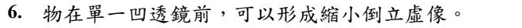
凹透鏡不管物體放在哪裡，都只成正立、縮小、虛像。
而且虛像必正立——「倒立虛像」根本不存在，看到這四個字就可以判錯。
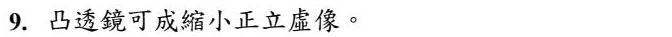
錯。凸透鏡成虛像時一定是放大的（那就是放大鏡）；成縮小的像時一定是倒立實像。
「縮小 ＋ 正立 ＋ 虛像」這個組合，是凹透鏡的專利。
把四種可能排一次就永遠不會錯：
· 凸透鏡，物在焦距外 → 倒立實像（可大可小）
· 凸透鏡，物在焦距內 → 正立放大虛像
· 凹透鏡 → 正立縮小虛像（永遠只有這一種）
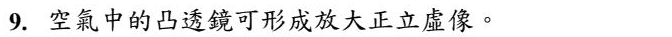
凸透鏡，物體放在焦點以內 → 正立、放大、虛像。這就是放大鏡。
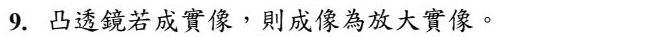
凸透鏡成實像時，大小要看物體放在哪裡：
· 物體在兩倍焦距外 → 倒立縮小實像（照相機）
· 物體剛好在兩倍焦距 → 倒立等大實像
· 物體在焦點和兩倍焦距之間 → 倒立放大實像（投影機）
所以「成實像就一定是放大實像」照課本來看是不對的。
⚠️ 補充：照上面的整理，這句話應該是「否」；但本題官方答案是 「是」，這裡照官方答案計分；如果考試遇到類似題目，請問老師這一題怎麼算。
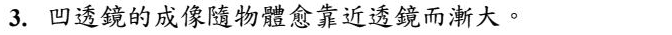
對，但要看清楚它說的是「漸大」，不是「變成放大」。
凹透鏡永遠成正立、縮小的虛像——這一點不會變。改變的是縮小的程度：物體愈靠近透鏡，像就愈接近原本的大小（但永遠不會超過）。
用生活經驗檢查：拿一副近視眼鏡看東西，愈貼近字，字愈接近正常大小；拿遠一點，字就縮得愈小。
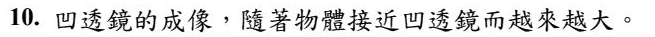
和 113 學年度是非題第 3 題一樣：凹透鏡永遠成正立縮小虛像，但物體愈靠近，像就愈接近原本的大小 → 「越來越大」是對的（只是永遠不會超過物體）。
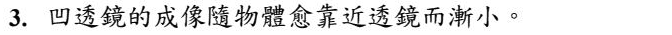
剛好和上一題相反：凹透鏡的像是隨物體靠近而漸大，不是漸小。
是非題常這樣出：把一個字換成反義字。每個形容詞都要對過一次。
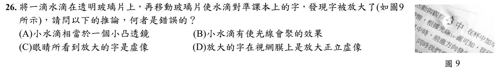
水滴中間厚、邊緣薄 → 小凸透鏡，會把光會聚（A、B 對）。字在焦點以內，所以我們看到的是正立放大的虛像（C 對）。
(D) 錯在「視網膜上」：不管看什麼，眼睛的水晶體在視網膜上成的一定是倒立縮小實像。虛像沒有光真的聚在那裡，不可能成在視網膜上。
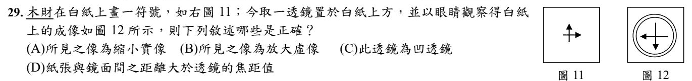
比較圖 11 和圖 12：箭頭原本往上、往右，成像變成往下、往左 → 倒立；而且變大了 → 倒立放大。
倒立的一定是實像；凸透鏡要成倒立放大實像，物體要在焦點和兩倍焦距之間 → 紙到鏡子的距離大於焦距 → (D)。
(A) 是放大不是縮小。(B) 倒立的不會是虛像。(C) 凹透鏡只能成正立縮小的像。
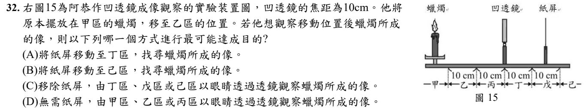
凹透鏡只成正立縮小虛像，像和蠟燭在同一側，紙屏接不到。
要看虛像，就要從另一側（丁、戊、己區）透過透鏡看 → (C)。
(A)(B) 用紙屏找虛像，永遠找不到。(D) 站在蠟燭那一側，眼睛沒有透過透鏡，看不到像。
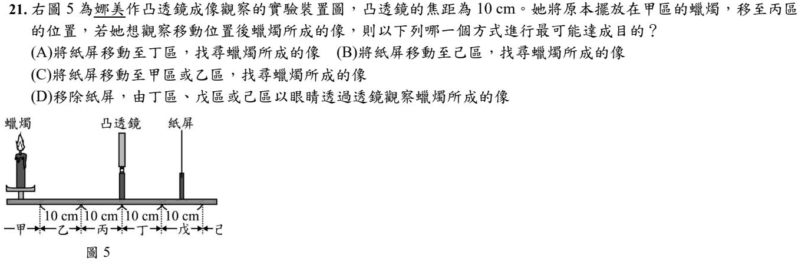
凸透鏡焦距 10 cm，丙區離透鏡不到 10 cm → 蠟燭在焦點以內 → 成正立放大的虛像（放大鏡）。
虛像紙屏接不到，要從另一側透過透鏡看 → (D)。(A)(B)(C) 都是用紙屏找，找不到。
和 112 學年度第 32 題對照：那一題是凹透鏡、這一題是凸透鏡放在焦點內，兩個都是虛像，答法一樣。
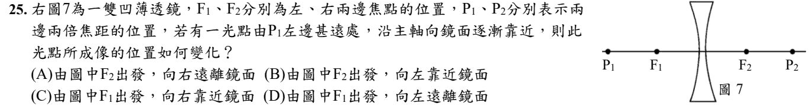
凹透鏡成像的規則：像一定是正立縮小虛像，和物體在同一側，而且一定落在同側焦點和鏡心之間。
物體在很遠的地方 → 像在焦點附近；物體慢慢靠近 → 像也慢慢往鏡心靠近。
⚠️ 補充：照這個規則，光點在左邊，像應該從左邊的 F₁ 出發、向右靠近鏡面，也就是 (C)。本題官方答案是 (A)，這裡照官方答案計分；如果考試遇到類似題目，請問老師這一題怎麼算。
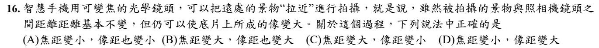
景物很遠時，像幾乎就成在焦點上 → 像距 ≈ 焦距。
要讓像變大：把焦距變長，像距也跟著變大，底片上的像就變大 → (B)。
生活例子：望遠鏡頭（長焦鏡頭）又長又大，就是因為焦距長；手機「拉近」就是在切換成焦距較長的鏡頭。
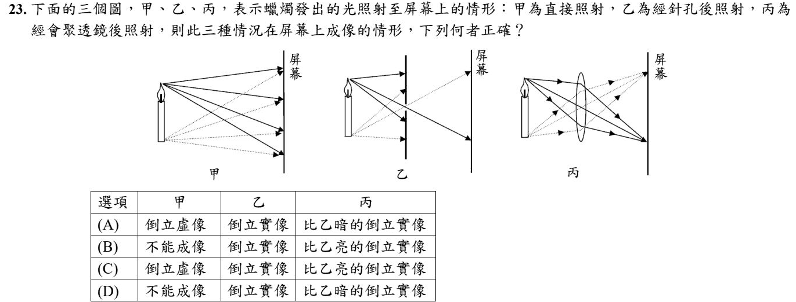
甲：沒有針孔、沒有透鏡，燭焰每一點的光散到整個屏幕，全部疊在一起 → 不能成像（只是被照亮）。
乙：針孔讓每一點只有一小束光通過 → 倒立實像，但光很少，比較暗。
丙：凸透鏡把同一點發出的很多條光會聚到同一點 → 倒立實像，而且比乙亮 → (B)。
(A)(C) 甲並沒有成虛像。(D) 透鏡收集的光比針孔多，所以是更亮。
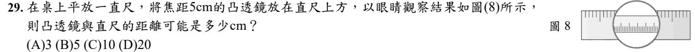
看圖 8：透鏡裡的刻度變大，而且方向沒有顛倒 → 正立放大虛像。
凸透鏡要成正立放大虛像，物體要在焦點以內：距離小於 5 cm → 只有 3 cm。
(B) 剛好在焦點不成像；(C) 10 cm 在兩倍焦距上，成倒立等大實像；(D) 20 cm 成倒立縮小實像。
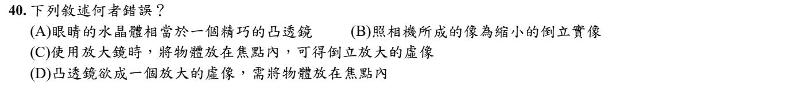
放大鏡：物體放在焦點內，得到正立放大的虛像，不是「倒立」→ (C) 錯。
(A) 水晶體是凸透鏡 ✓。(B) 照相機成縮小倒立實像 ✓。(D) 凸透鏡成放大虛像要放焦點內 ✓。
物體所發出的光，經過單一凸透鏡後，不可能產生哪一種像？
- (A) 放大的實像
- (B) 縮小的實像
- (C) 放大的虛像
- (D) 縮小的虛像
凸透鏡的虛像只出現在焦點內，而且一定是放大的。
有一個物體放在凸透鏡前，並在鏡後的紙屏得到一個清晰的像，若將透鏡的外緣一小圈用不透明的物體遮住使其直徑變小，則紙屏上的像會有何變化？
- (A) 不變
- (B) 亮度變暗，但像的大小不變
- (C) 像的大小變小，但亮度不變
- (D) 亮度變暗，且像的大小也變小
像的大小由物距和焦距決定。遮住外圈只是通過的光變少，只變暗，像還是完整的。
一焦距 10 cm 的凸透鏡，欲產生實像時，物體與透鏡之距離不可能為多少？
- (A) 8 cm
- (B) 12 cm
- (C) 20 cm
- (D) 30 cm
實像需要物距大於焦距。8 cm 在焦點內，只會成虛像。
小如拿著一個透鏡，置於原子筆上方 15 公分的地方，觀測結果如右圖，則該透鏡焦距可能為何？

- (A) 5 公分
- (B) 7.5 公分
- (C) 10 公分
- (D) 20 公分
圖中看到的筆桿放大、方向沒有顛倒，是正立放大虛像，物體要在焦點內：15 公分＜焦距。四個選項只有 20 公分符合。
燭火放在上述哪幾個位置時，無法在屏幕上成像？

- (A) 甲乙丙丁戊
- (B) 甲乙丙
- (C) 丁戊
- (D) 丙丁戊
丁在焦點上不成像；戊在焦點內成虛像，紙屏接不到。甲、乙、丙都在焦點外，能成實像。
若將燭火放在甲處，鏡後的紙屏該挪到何處，才能呈現清晰的像？
- (A) f 之內
- (B) f～2f 之間
- (C) 2f 之後
- (D) 無法找到清晰的像
甲在 2f 外，像落在 f～2f 之間。
若將燭火由丙處往外移動，使其遠離透鏡，則成像將會有何變化？
- (A) 越來越小
- (B) 越來越大
- (C) 由倒立變正立
- (D) 由正立變倒立
實像的規則：物體離透鏡愈遠，像愈小，一直是倒立的。
若將物體置於戊處，有關其成像的性質，下列敘述何者正確？
- (A) 正立放大的虛像
- (B) 倒立放大的實像
- (C) 倒立縮小的實像
- (D) 正立縮小的虛像
戊在焦點內，就是放大鏡的情況：正立放大虛像。
承上題，若將燭火往鏡心方向移動，則像將會有何變化？
- (A) 越來越小
- (B) 越來越大
- (C) 由倒立變正立
- (D) 由正立變倒立
放大鏡拿得愈靠近物體，放大的效果愈小；貼到物體上時大小幾乎一樣。所以虛像愈來愈小。
有一凹透鏡的焦距為 10 公分，今將一物體置於此凹透鏡前 40 公分處，則所成的像為下列何者？
- (A) 正立放大虛像
- (B) 倒立縮小實像
- (C) 正立縮小虛像
- (D) 倒立放大實像
凹透鏡不管物體放哪裡，都是正立縮小虛像。
小明以不同的透鏡觀察如右圖所示的紙卡，所得結果如下圖，試問何者必為使用凹透鏡觀察的結果？

- (A) 圖 (A)
- (B) 圖 (B)
- (C) 圖 (C)
- (D) 圖 (D)
凹透鏡只會成正立縮小的像。紙卡上的圖案筆尖朝下，正立就是一樣筆尖朝下、而且變小，是 (D)。
關於判別實像、虛像的依據，何項是正確的？
- (A) 平面鏡所成的是虛像，透鏡所成的是實像
- (B) 由光的反射而成的是實像，折射而成的是虛像
- (C) 實像能在紙屏上成像，虛像則否
- (D) 虛像必定是放大的，實像必定是縮小的
能不能在紙屏上出現，就是判別的依據。(A) 透鏡也會成虛像。(B) 凹面鏡反射也能成實像。(D) 放大、縮小都有可能。
均均利用透鏡來觀察直尺上的刻度，並將直尺置於透鏡的焦距內觀察之，如下圖所示，試問圖（一）和圖（二）分別是以何種透鏡觀察的結果？

- (A) 凸透鏡；凹透鏡
- (B) 凹透鏡；凸透鏡
- (C) 凸透鏡；凸透鏡
- (D) 凹透鏡；凹透鏡
圖（一）鏡中的刻度變小又密，是凹透鏡。圖（二）刻度變大又疏，是焦距內的凸透鏡（放大鏡）。
複式顯微鏡的物鏡及照相機的鏡頭，兩者所使用的鏡片分別為何？
- (A) 凸透鏡；凸透鏡
- (B) 凸透鏡；凹透鏡
- (C) 凹透鏡；凸透鏡
- (D) 凹透鏡；凹透鏡
兩者都要把光聚起來成像，都是凸透鏡。
有一被觀察的物體形狀如右圖所示，則由複式顯微鏡的目鏡所看到的像應為下列何者？（不計放大倍率）

- (A) 圖 (A)
- (B) 圖 (B)
- (C) 圖 (C)
- (D) 圖 (D)
複式顯微鏡的像上下左右都相反，等於把物體轉 180 度。箭頭原本指右下，轉過來指左上，是 (D)。
承上題，若改用解剖顯微鏡觀察同一個標本，由目鏡所觀察到的成像應為下列何者？（不計放大倍率）
- (A) 圖 (A)
- (B) 圖 (B)
- (C) 圖 (C)
- (D) 圖 (D)
解剖顯微鏡看到的是正立的像，方向和物體相同，仍指右下。
在做生物實驗時，我們通常利用複式顯微鏡來觀察微小的生物，則下列有關複式顯微鏡的敘述何者錯誤？
- (A) 所觀察到的像為實像
- (B) 內裝有目鏡和物鏡
- (C) 物鏡和目鏡皆為凸透鏡
- (D) 經由顯微鏡所成的像必定是放大的像
眼睛從目鏡看到的最後成像是虛像。
有關複式顯微鏡的原理如下圖，下列敘述何者錯誤？

- (A) 物鏡的焦距較短
- (B) 目鏡的焦距較長
- (C) 反光鏡是調整入射光線的大小
- (D) 物體經過 2 次折射後，為放大倒立、左右相反實像
經過物鏡、目鏡兩次放大後，最後的像是虛像，(D) 寫實像是錯的。
以下關於傳統相機的敘述，何者正確？
- (A) 物體須在相機的焦點至兩倍焦距間才能成像
- (B) 照景物時，所成的像為倒立縮小實像
- (C) 相機的鏡頭為一組凹透鏡
- (D) 可將影像轉換成數位訊號儲存在記憶體上
(A) 景物在兩倍焦距外。(C) 鏡頭是凸透鏡組。(D) 那是數位相機。
阿強用照相機拍攝遠處的樹木時，發現成像在底片之前，導致拍攝的影像模糊，於是他做了下列各種調整，而哪一種方法無法改善圖像的清晰度？
- (A) 換用較長焦距的透鏡
- (B) 把照相機移近樹木
- (C) 縮短鏡頭和底片的距離
- (D) 改用感光度更高的底片
問題是像的位置不在底片上。(A)(B) 讓像往後移，(C) 讓底片往前移，都能對準。(D) 只影響亮度，位置沒變。
使用單眼相機拍照時，若將光圈調大，則對相機有何影響？
- (A) 增加光線的進入量
- (B) 減少底片的曝光時間
- (C) 減少光線的進入量
- (D) 增加底片的曝光時間
光圈管進光量，快門管曝光時間。光圈大，進來的光多。
照相機的透鏡組具有何種作用？
- (A) 會聚光線
- (B) 發散光線
- (C) 平移光線
鏡頭是凸透鏡組，功能是會聚光線成像。
被照相的物體應在透鏡組的前方何處？

- (A) 大於兩倍焦距
- (B) 等於一倍焦距
- (C) 介於一倍焦距與兩倍焦距之間
- (D) 小於一倍焦距
相機要成倒立縮小實像，物體要在 2f 外。
底片上所成的像為何？
- (A) 倒立縮小實像
- (B) 正立縮小實像
- (C) 倒立放大虛像
- (D) 倒立放大實像
物體在 2f 外，成倒立縮小實像。
底片成像在透鏡組的後方何處？
- (A) 小於一倍焦距
- (B) 介於一倍焦距與兩倍焦距之間
- (C) 等於一倍焦距
- (D) 大於兩倍焦距
物在 2f 外，像就在 f～2f 之間。
若拍攝的物體遠離相機時，則相機的鏡頭應如何移動，底片上的像才會維持清晰？
- (A) 往外拉長
- (B) 向內縮短
- (C) 維持不動
- (D) 無論鏡頭如何移動均無法成清晰的像
物體愈遠，像愈靠近透鏡，所以鏡頭要往內縮，讓像落在底片上。
下列何者是凸透鏡的應用？
- (A) 近視眼鏡
- (B) 老花眼鏡
- (C) 汽車的後視鏡
- (D) 汽車的擋風玻璃
老花眼鏡是凸透鏡。近視眼鏡是凹透鏡；後視鏡是凸面鏡，不是透鏡。
下列各種成像中，何者屬於虛像？
- (A) 針孔成像
- (B) 複式顯微鏡所見的像
- (C) 視網膜上的成像
- (D) 傳統相機底片上的像
其他三個都投射在紙屏、視網膜或底片上，是實像。
爺爺眼睛不好，想利用凸透鏡的放大作用來看報紙，請問報紙最好放在凸透鏡的哪一個範圍內？
- (A) 焦點內
- (B) 焦點到兩倍焦距中間
- (C) 兩倍焦距上
- (D) 兩倍焦距外
當放大鏡用，物體要放在焦點內，才有正立放大虛像。
電影影片（底片）帶能夠透過放映機的鏡頭呈現大螢幕的效果，可知電影放映機所選用的透鏡及影片到透鏡之距離應為下列何者？
- (A) 凸透鏡，影片放在透鏡之兩倍焦距外
- (B) 凸透鏡，影片放在透鏡之焦點內
- (C) 凸透鏡，影片放在透鏡之焦點與兩倍焦距間
- (D) 凹透鏡，影片放在透鏡之焦點上
要在銀幕上看到（實像）又要放大，物體要放在 f～2f 之間。
用同一個凸透鏡做成像實驗，p 是蠟燭到透鏡的距離，q 是屏幕上出現清晰像時屏幕到透鏡的距離：
p ＝ 20 cm → q ＝ 60 cm；p ＝ 30 cm → q ＝ 30 cm；p ＝ 45 cm → q ＝ 22.5 cm；p ＝ 60 cm → q ＝ 20 cm。
若把蠟燭放在 p ＝ 25 cm 處，屏幕上的像會是什麼樣子？
- (A) 倒立縮小實像
- (B) 倒立放大實像
- (C) 正立放大虛像
- (D) 倒立、和蠟燭一樣大的實像
先找焦距：p ＝ q ＝ 30 cm 時，物體在兩倍焦距上（成等大倒立實像）→ 2f ＝ 30 → f ＝ 15 cm。
p ＝ 25 cm 介於 f（15）和 2f（30）之間 → 倒立放大實像（像距會大於 30 cm）。
(A) 是物體在 2f 以外；(C) 是物體在 f 以內，而且虛像在屏幕上接不到。
屏幕上已經有蠟燭清晰的實像。小方把一副近視眼鏡放在蠟燭和凸透鏡之間（靠近凸透鏡），像變模糊了。要讓像再次清晰，屏幕應該怎麼移？
- (A) 往遠離凸透鏡的方向移
- (B) 往靠近凸透鏡的方向移
- (C) 往上移
- (D) 不用移，等一下就會清楚
近視眼鏡是凹透鏡，會讓光線先發散一點；凸透鏡要把比較散的光再會聚起來，需要更遠的距離 → 像成在更遠的地方，屏幕要往後（遠離透鏡）移。
這也是近視眼戴凹透鏡的原理：把原本太早會聚的像，往後推到視網膜上。
蠟燭經凸透鏡在屏幕上成清晰的倒立實像。蠟燭燒了一段時間後變短，燭焰位置往下降。屏幕上燭焰的像會往哪裡移動？
- (A) 往上移
- (B) 往下移
- (C) 不會動
- (D) 立刻消失
實像是上下顛倒的：物體往下移，像就往上移。
晴天時，宜文把凸透鏡拿在火柴上方，透過透鏡看到火柴正立、放大。她想用陽光點燃火柴（火柴不動），透鏡應該怎麼移動？
- (A) 往下移，更靠近火柴
- (B) 往上移，離火柴遠一點
- (C) 往左移
- (D) 不用移，等久一點就會燒起來
看到正立放大像 → 火柴在透鏡的焦點以內（離透鏡太近）。
要讓陽光會聚在火柴上，火柴必須剛好在焦點上 → 要拉開透鏡和火柴的距離 → 透鏡往上移。
小明把爺爺的透鏡拿在一支原子筆正上方 18 公分處，透過透鏡看到原子筆正立而且放大。這個透鏡的焦距最可能是多少？
- (A) 6 公分
- (B) 9 公分
- (C) 15 公分
- (D) 24 公分
正立放大 → 這是放大鏡的用法，筆一定在焦點以內：18 公分 ＜ 焦距 → 只有 24 公分符合。
(A)(B)(C) 焦距小於 18 公分時，筆在焦點以外，看到的會是倒立的實像，不會是正立放大。
複式顯微鏡的物鏡相當於一個凸透鏡，要先成一個倒立放大的實像。若物鏡的焦距是 2 cm，玻片標本到物鏡的距離最可能是多少？
- (A) 1 cm
- (B) 3 cm
- (C) 4 cm
- (D) 5 cm
凸透鏡要成倒立放大實像，物體要在一倍焦距和兩倍焦距之間：2 cm ＜ 距離 ＜ 4 cm → 3 cm。
(A) 在焦點以內，成正立虛像。(C) 剛好在兩倍焦距，像和物一樣大。(D) 在兩倍焦距以外，成縮小實像。
第 4 章 ⑧ 視力矯正與光的顏色49 題
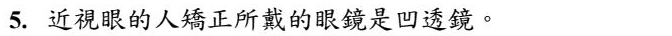
對。近視是眼球太長，光線太早會聚，成像落在視網膜前面。
要救它，就要先把光發散一點，讓會聚點往後退——這正是凹透鏡在做的事。
遠視相反：成像落在視網膜後面，要提早會聚，所以戴凸透鏡。記法：近視凹、遠視凸。

和 113 學年度是非題第 5 題一樣：近視的像落在視網膜前面，要先讓光發散一點 → 凹透鏡。
記法：近視凹、遠視凸。
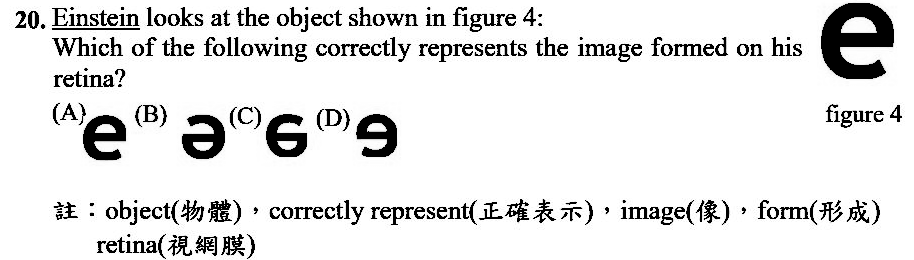
眼睛像一台照相機：水晶體是凸透鏡，在視網膜上成倒立、縮小、實像。
「倒立」是上下、左右都顛倒，等於把 e 轉半圈 → 看起來像 ə → (B)。
(A) 沒有轉。(C)(D) 只翻了一個方向。
那為什麼我們看到的世界是正的？因為大腦會自動把它轉回來。
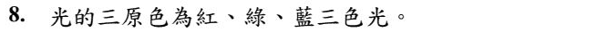
色光的三原色是紅（R）、綠（G）、藍（B），螢幕上的每一個顏色都是用它們依不同強度混出來的。
不要和美術課的「顏料三原色」（洋紅、黃、青）搞混。
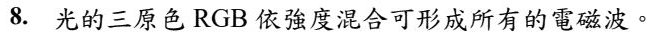
RGB 混合可以得到各種看得見的顏色（色光），但電磁波還包括無線電波、微波、紅外線、紫外線、X 光……這些人眼看不見，不是用紅綠藍混出來的。
「所有的電磁波」說得太大了 → 否。
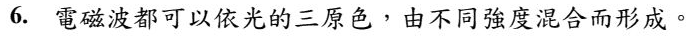
和 113 學年度是非題第 8 題同一個陷阱：三原色只能混出可見光的各種顏色，不是所有電磁波（無線電波、X 光等都不行）。
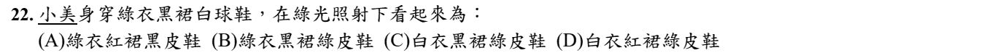
物體的顏色＝它反射回來的色光。在綠光底下：
綠衣：反射綠光 → 綠
黑裙：什麼光都吸收 → 黑
白鞋：什麼色光都反射，照到綠光就反射綠光 → 綠
→ 綠衣、黑裙、綠鞋 (B)。
規則：色光照到和自己同色或白色的地方 → 看起來是那個色光；照到其他顏色 → 被吸收，看起來是黑色。
要讓黑色共 10 cm²：
(A) 紅光：紅、白 → 紅色；藍 8 ＋ 綠 2 ＝ 10 變黑 ✓
(B) 藍光：紅 4 ＋ 綠 2 ＝ 6 變黑
(C) 綠光：藍 8 ＋ 紅 4 ＝ 12 變黑
(D) 白光：各顏色照原樣，沒有黑色
綠色墨鏡只讓綠光通過，其他色光都被擋掉。所以透過它看：
綠色、白色的部分 → 都只剩綠光進眼睛 → 看起來綠；紅、藍的部分 → 沒有光通過 → 看起來黑。
奈及利亞（綠白綠）→ 綠、綠、綠，整面一樣 ✓
法國 → 黑綠黑；義大利 → 綠綠黑；祕魯 → 黑綠黑。
兩件事要一起想：像的大小和色光的混合。
① 像的大小：物體愈靠近凸透鏡（但在焦點外），成的實像愈大。① 藍燈最靠近透鏡 → 像最大；③ 紅燈最遠 → 像最小。
② 三個像疊在一起：最外圈只有藍；中間一圈是藍 ＋ 綠 ＝ 青；最中心三色都有 ＝ 白 → (A)。
色光混合：紅＋綠＝黃、綠＋藍＝青、紅＋藍＝洋紅、紅＋綠＋藍＝白。
白光 ＝ 紅 ＋ 綠 ＋ 藍。三種色光各自遇到哪一片膜：
紅光：碰到紅光反射膜（左下到右上那條）→ 被反射，往上走 → (1)
綠光：兩片膜都讓它通過 → 直直往右 → (2)
藍光：碰到藍光反射膜（左上到右下那條）→ 被反射，往下走 → (3)
(1)(2)(3) ＝ 紅、綠、藍 → (B)。
對照圖 11：那是把三色光「合」起來；圖 12 是同一條路線倒著走，把白光「分」開。
黃色香蕉在白光下反射紅光 ＋ 綠光（紅＋綠＝黃）。
這兩種光往右射進稜鏡：紅光被紅光反射膜反射到上方（不會到眼睛）；綠光直直穿過 → 進入眼睛。
眼睛只收到綠光 → 香蕉看起來是綠色。
若小華近視 300 度，試問應該配戴下列哪一種鏡片，才能矯正視力？
- (A) 凸面鏡
- (B) 凹面鏡
- (C) 凸透鏡
- (D) 凹透鏡
眼鏡是讓光穿過的，要用透鏡。近視用凹透鏡。
華姍的爺爺閱讀報紙時，常必須將報紙拿得遠遠的，或是用放大鏡才能看得清楚，試問爺爺可能患有何種視覺缺陷？
- (A) 近視眼
- (B) 青光眼
- (C) 白內障
- (D) 老花眼
年紀大、看近處吃力，就是老花眼。
下圖的情況需配戴適當焦距的何種鏡片來矯正視力？

- (A) 凸面鏡
- (B) 凹面鏡
- (C) 凸透鏡
- (D) 凹透鏡
遠處的光聚在視網膜前，是近視，用凹透鏡把光稍微發散。
右圖為某種視覺缺陷的視網膜成像圖，下列相關敘述何者正確？

- (A) 此視覺缺陷稱為近視眼
- (B) 此視覺缺陷可配戴凹透鏡矯正
- (C) 此視覺缺陷稱為遠視眼
- (D) 此視覺缺陷由水晶體焦距過短而引起
圖上的像落在視網膜後方，是遠視，焦距過長，用凸透鏡矯正。
以下關於眼睛與眼鏡的敘述，何者錯誤？
- (A) 近視眼的人看遠物時，會成像在眼睛的視網膜前
- (B) 近視眼的人須戴凹透鏡來矯正
- (C) 遠視眼的人看近物時，會成像在眼睛的視網膜前
- (D) 遠視眼的人須戴凸透鏡來矯正
遠視是成像在視網膜後。
大雄視力良好，戴著無度數的太陽眼鏡，其鏡片應為下列何者？

- (A) 圖 (A)
- (B) 圖 (B)
- (C) 圖 (C)
- (D) 圖 (D)
無度數的鏡片厚度處處相同，不會聚也不發散。(D) 的厚度均勻。
小花所患的視覺缺陷應該為何？
- (A) 近視
- (B) 遠視
- (C) 老花眼
- (D) 青光眼
看遠處模糊，是近視。
承上題，小花應該配戴下列哪一種鏡片來矯正視力？

- (A) 圖 (A)
- (B) 圖 (B)
- (C) 圖 (C)
- (D) 圖 (D)
近視用凹透鏡：中間薄、周圍厚，是 (B)。
小花眼中水晶體的焦距較正常眼睛水晶體的焦距比較為何？
- (A) 較長
- (B) 一樣
- (C) 較短
近視是焦距太短，光太早聚在一起。
如果小花不戴眼鏡時，遠處的物體其成像可能在小花眼睛視網膜的何處？
- (A) 在視網膜之前
- (B) 恰好落在視網膜上
- (C) 在視網膜後方
- (D) 完全無法成像
近視成像在視網膜前。
此視覺缺陷的名稱為何？

- (A) 白內障
- (B) 遠視
- (C) 鬥雞眼
- (D) 近視
像落在視網膜後方，是遠視。
此視覺缺陷應配戴何種鏡片矯正之？
- (A) 凸面鏡
- (B) 凹面鏡
- (C) 凸透鏡
- (D) 凹透鏡
遠視用凸透鏡，讓光早一點聚。
下列哪一個光學儀器不屬於凸透鏡的運用？
- (A) 遠視眼鏡
- (B) 老花眼鏡
- (C) 照相機
- (D) 近視眼鏡
近視眼鏡是凹透鏡。
(1) 遠視：當眼球長度小於正常或角膜扁平或水晶體較薄時，當光線進入眼內，其焦點會聚在視網膜之後，稱為「遠視」。遠視在看遠的物體時，不但看不清楚，看近時，焦點會在視網膜更後方，所以看近更不清楚。
(2) 老花眼：隨著年齡的增加，水晶體逐漸硬化，調節能力減弱，睫狀肌的收縮也減小了，當看近的物體時，無法屈光使影像投射在視網膜，而產生模糊視覺。
(3) 近視：近視是眼球增長所造成，有些具有遺傳性。當眼球由圓形變成橢圓形，看遠方物體時，水晶體無法藉著調適作用改變水晶體形狀，而使影像焦點會聚在視網膜前。
(4) 亂視：有人稱之為散光，通常是因為角膜變形、不規則所造成。
遠視、老花眼與近視中，上述哪些症狀在看遠處物體時，會看不清楚？
- (A) 近視
- (B) 近視與遠視
- (C) 遠視與老花眼
- (D) 三個均不清楚
文章說遠視看遠的物體也看不清楚，近視也是。老花眼是看近有困難。
(1) 遠視：當眼球長度小於正常或角膜扁平或水晶體較薄時，當光線進入眼內，其焦點會聚在視網膜之後，稱為「遠視」。遠視在看遠的物體時，不但看不清楚，看近時，焦點會在視網膜更後方，所以看近更不清楚。
(2) 老花眼：隨著年齡的增加，水晶體逐漸硬化，調節能力減弱，睫狀肌的收縮也減小了，當看近的物體時，無法屈光使影像投射在視網膜，而產生模糊視覺。
(3) 近視：近視是眼球增長所造成，有些具有遺傳性。當眼球由圓形變成橢圓形，看遠方物體時，水晶體無法藉著調適作用改變水晶體形狀，而使影像焦點會聚在視網膜前。
(4) 亂視：有人稱之為散光，通常是因為角膜變形、不規則所造成。
遠視、老花眼與近視中，上述哪些症狀在看近處物體時，會看不清楚？
- (A) 近視
- (B) 近視與遠視
- (C) 遠視與老花眼
- (D) 三個均不清楚
文章說遠視看近更不清楚，老花眼也是看近模糊。近視看近沒有問題。
下列哪一個色光不屬於光的三原色？
- (A) 紅
- (B) 黃
- (C) 綠
- (D) 藍
光的三原色是紅、綠、藍。黃光由紅光和綠光混合而成。
下列哪一個現象，與光的色散有關？
- (A) 天空看起來是藍色
- (B) 衣服看起來是紅的
- (C) 彩虹有 7 個顏色
- (D) 以上皆是
色散是白光分成各種色光，彩虹就是。衣服的顏色是反射與吸收；天空藍是光的散射。
下列哪些光線的組合無法合成白光？
- (A) 紅、橙、黃、綠、藍、靛、紫七種色光
- (B) 紅、藍、綠三種色光
- (C) 紫、紅兩種色光
- (D) 黃、藍兩種色光
黃光＝紅＋綠，再加藍就齊全了，(D) 可以。紫和紅都偏紅藍，缺綠，無法合成白光。
右圖為太陽光通過三稜鏡後的情形，下列相關敘述何者錯誤？

- (A) 此為光的色散現象
- (B) 光因折射而分為七種色光
- (C) 甲為紫光、丙為紅光
- (D) 乙為黃光
紅光偏折最小、紫光偏折最大。甲偏得少是紅光，丙偏得多是紫光，(C) 寫反了。
太陽光在水滴中產生哪些物理現象？
- (A) 折射、干涉
- (B) 折射、繞射
- (C) 折射、反射
- (D) 干涉、反射
文中「改變了行進方向」是折射，光在水滴內壁還會反射。
彩虹的敘述，下列何者錯誤？
- (A) 讓太陽光通過三稜鏡，也可以看到類似彩虹的七色光
- (B) 這是光的色散現象
- (C) 欲觀察到彩虹必須面向太陽的方向
- (D) 彩虹出現的時間通常不會很長
看彩虹要背對太陽。
下列有關三原色的敘述，下列何者正確？

- (A) 因太陽光中的可見光僅有紅綠藍三種顏色的光波，故定三原色為紅綠藍
- (B) 對任何動物而言，光都可分為紅綠藍三原色
- (C) 人的三原色是紅綠藍，故可看到的顏色僅有黑、白、紅、綠、藍五色
- (D) 人的椎狀細胞中，又以分辨紅、綠、藍的三種椎狀細胞最多，故光的三原色為紅綠藍
文章直接說了 (D)。(A) 可見光是連續的光譜。(B) 文章說狗只有兩種椎狀細胞。(C) 混色可以看到非常多顏色。
當有一個染料的顏色僅可以吸收紅光時，此染料顏色必為染料三原色之一。由光的三原色圖中，我們可以推知當我們用白光照此染料時，此染料所顯現的顏色為何？
- (A) 洋紅色
- (B) 青色
- (C) 黃色
- (D) 紅色
白光是紅＋綠＋藍，紅光被吸收，剩下綠＋藍＝青色。
如果想要增加室內的明亮度，最好用哪一種顏色的塗料，可以獲得最好的效果？
- (A) 白色
- (B) 綠色
- (C) 藍色
- (D) 黃色
白色反射所有色光，最亮。
生物老師告訴同學植物的光合作用中，葉綠素將光能、二氧化碳和水轉變成葡萄糖來維持植物所需要的養分。根據光學常識判斷，綠色植物在哪一種顏色的燈光照射下生長的情況最差？
- (A) 紅光
- (B) 綠光
- (C) 紫光
- (D) 白光
葉子看起來綠，是因為綠光被反射掉了，吸收最少，能用的能量最少。
物體所呈現的顏色與下列哪項因素無關？
- (A) 照光的顏色
- (B) 物體表面吸收光的性質
- (C) 物體表面反射光的性質
- (D) 物體表面折射光的性質
不透明物體的顏色取決於照的光，以及表面吸收和反射什麼色光。
小華穿了一件單色的 T 恤參加舞會，只見他的衣服隨著五彩燈光的變化而改變為各種顏色，試問這件 T 恤的顏色應為什麼色？
- (A) 紅
- (B) 黃
- (C) 綠
- (D) 白
白色反射所有色光，照什麼光就呈現什麼顏色。
戴深綠色太陽眼鏡去看紅花綠葉時，所呈現出的顏色最接近下列何者？
- (A) 紅花綠葉
- (B) 紅花黑葉
- (C) 綠花紅葉
- (D) 黑花綠葉
綠色鏡片只讓綠光通過。綠葉反射的綠光能到眼睛；紅花只反射紅光，被擋掉，看起來是黑的。
一張正方形的彩色色紙上塗有 4 種顏色，分別為占面積 20% 的白色，20% 的紅色，35% 的綠色，25% 的藍色。以紅光照射後，色紙上呈現的紅色與黑色面積比為何？
- (A) 3：7
- (B) 2：8
- (C) 7：3
- (D) 4：6
白和紅呈紅色：20＋20＝40%。綠和藍呈黑色：35＋25＝60%。比值 4：6。
如右圖所示，小美有一個洋娃娃，有著綠色的頭，黃色的身體，紅色的手及藍色的腳。若小美在房間裡對洋娃娃照射黃色的光線（已知黃光為紅光與綠光的組合），則有關小美所看見洋娃娃各部位的顏色，下列敘述何者正確？

- (A) 黑色的頭，黃色的身體
- (B) 黑色的手，黃色的身體
- (C) 黑色的腳，黃色的身體
- (D) 紅色的手，藍色的腳
黃光＝紅光＋綠光。頭反射綠光（綠）；身體反射紅、綠（黃）；手反射紅光（紅）；腳只反射藍光，但照的光沒有藍，所以變黑。
光的三原色是紅、綠、藍，且將等量的紅光與綠光混合後，可產生黃光。今若透過紅色的玻璃紙看印在白紙上的圖（一）與圖（二），試問會看到何種畫面？

- (A) 均可看到被關在牢籠中的鳥
- (B) 均可見未被牢籠所關的鳥
- (C) 圖（一）中看不見特別的圖樣，圖（二）中看見未被牢籠所關的鳥
- (D) 圖（二）中看不見特別的圖樣，圖（一）中看見未被牢籠所關的鳥
透過紅色玻璃紙，只有紅光到得了眼睛。白紙、紅牢籠、黃小鳥都有紅光，看起來一樣紅，圖（一）什麼都分不出來。
圖（二）的綠小鳥沒有紅光，看起來是黑的，牢籠則和紙融在一起，只看到一隻沒被關的鳥。
當光線照射藍色玻璃紙時，會有何現象？
- (A) 讓藍光通過吸收其他色光
- (B) 吸收藍光讓其他色光通過
- (C) 吸收藍光讓互補色光通過
- (D) 吸收互補色光讓其他色光通過
透明物體：透過同色光，吸收不同色光。
下列有關眼睛與視力矯正的敘述，何者正確？
- (A) 眼睛裡的水晶體相當於一個凹透鏡
- (B) 近視眼看遠處的物體時，像落在視網膜的前方
- (C) 近視眼要戴凸透鏡來矯正
- (D) 老花眼要戴凹透鏡來矯正
(B) ✓ 近視：眼球太長或水晶體太凸，遠處的光太早會聚，像落在視網膜前方。
(A) 水晶體是凸透鏡，才能在視網膜上成倒立縮小實像。(C) 近視要戴凹透鏡，先把光發散一點。(D) 老花（看近處的像落在視網膜後方）要戴凸透鏡。
暗室裡掛著甲、乙、丙、丁四顆顏色不同的球。只用紅光照時，看得到丙和丁；只用綠光照時，看得到甲和丁；只用藍光照時，看得到乙和丁（其他的球看起來都是黑的）。哪一顆最可能是白色的球？
- (A) 甲
- (B) 乙
- (C) 丙
- (D) 丁
物體的顏色 ＝ 它反射的色光。看得到 → 有反射那種色光。
丁在紅光、綠光、藍光下都看得到 → 三種色光都反射 → 白色。（丙只反射紅光 → 紅球；甲只反射綠光 → 綠球；乙只反射藍光 → 藍球。）
學校用投影機上課，投影出彩色畫面。為了讓學生看到最接近原本顏色的畫面，布幕最好是什麼顏色？
- (A) 白色
- (B) 黑色
- (C) 紅色
- (D) 綠色
白色表面會反射所有色光，投影機打什麼顏色就反射什麼顏色，畫面不會變色。
(B) 黑色吸收所有色光，看不到畫面。(C)(D) 只反射一種色光，其他顏色的部分會變暗或變黑。
回收桶裡有綠色、橘色、藍色、透明無色四種寶特瓶，要做成這種照明裝置，選哪一種顏色的瓶子室內最亮？
- (A) 綠色
- (B) 橘色
- (C) 藍色
- (D) 透明無色
有顏色的透明瓶只讓和自己同色的光通過，其他色光被擋掉，光就變少了。透明無色的瓶子讓紅、綠、藍各色光都通過，進屋的光最多。
承上題，小依用綠色透明寶特瓶做照明裝置，還在瓶子屋內那一端貼上一層藍色玻璃紙，想讓房間充滿藍光。結果最可能怎樣？
- (A) 房間充滿藍光
- (B) 房間充滿綠光
- (C) 房間呈現綠和藍混合的青色光
- (D) 幾乎沒有光透進房間，很暗
陽光先經過綠色瓶子 → 只剩綠光。綠光再碰到藍色玻璃紙，藍色玻璃紙只讓藍光通過 → 綠光被擋掉 → 幾乎沒有光進屋。
(A) 藍光早在綠色瓶子那一關就被擋掉了。(C) 色光混合是兩種光一起照到同一處，這裡是一層一層過濾，只會愈濾愈少。